11 · 迁移清单
这章回答一件事：把这套 MoE 训练优化搬到别的模型、别的集群上，哪些该搬、按什么顺序搬、每样大约值多少、怎么判断搬对了。A 档 17 条与模型结构无关、通用必做；B 档 7 条按场景挑（多片 DCN、长上下文 CP、批大小、优化器）；C 档 6 条绑定 KDA / MLA 这类特定结构；另有两条补充（A15b、B08）。总表在主文档，复现实测见 09 §1.1。
💡一句话结论先搬 A 档（与模型无关）：CPU 交叉 AOT、HLO 通信重排 + 重抓的 cost profile、SparseCore 通信开关、FP8 + QAG（性能上该做，精度没闭合，见 A08）。再按场景挑 B 档，最后才碰 C 档（绑定 KDA / MLA）。
先看：能搬、要重测、别搬
「能搬」指做法能照着做，收益仍要在自己模型上量。判断做对了的方法写在各条的「前置 / 坑」里。
| 结论 | 内容 | 条目 |
|---|---|---|
| 能搬 | CPU 交叉 AOT；自写 kernel 带 pl.CostEstimate；SparseCore 三组 flag（offload 与 async fusion 一起改、RS v2 三个一起写、非对称循环显式写）；FP8 时先开 QAG；运维四条 |
A01、A04、A05–A07、A09、A15、A15b、A16、A17 |
| 能搬（思路 / 教训） | KDA kernel 链三思路（B·T 展平、反向复用 residual、CostEstimate）；CPU AOT 下逐个确认 kernel 选的是 TPU 版；自定义 kernel 碰 remat 要显式命名 residual | C01、C02、C03、06 §2 |
| 能搬（原则） | 数据与存储三条；kernel 调参的赢家要在训练 profile 里复验 | 12 §3.2、05 §9.1 |
| 要重测 | cost profile（模型、kernel、flag、片数任一变了就重抓）；HLO 通信重排阈值，尤其 two-stage RS 上限 | A03、A02 |
| 要重测 | GMM tile（换 EP 或形状就重扫）、Splash block、并行形状、remat 档位；large_2nd_minor_layout、FP8 精度闸 |
A11–A14、A08 |
| 要重测 | pipeliner、RS 双 SC、prefer_async_allgather_to_allreduce；多片网卡、DCN AR combiner、MegaScale 阈值 |
场景开关表、B02、B08 |
| 别搬 | GPU 上「FC1 输入存成 FP8」；fused MoE 的微基准收益和另一套调度上测出的收益；小号模型的百分比搬到大号、MFU 跨模型比 | 04 §3、05 §9.1、05 §1、08 |
| 别搬 | 没有 KDA / MLA / 线性注意力就跳过；C05 要按自己的层排布重写 | C 档 |
| 别做 | 关 host reduction、生产照抄 P7 功耗档、vmem 改 49152 | 刻意没收 |
- 指数 51 → 37 单片 AOT 复现满配，HLO 通信重排关 → 开（快约 30%）
- 不到 1% 复现时 HLO 通信重排关的那组与生产同配置的差
ℹ️30 条之外的最新状态（详见 03 §17）
- 单片最快 指数 34（RS 双 SC ＋ 新 profile ＋ 双 SC 通信搜索，后者验证过、未进生产，不是生产默认）；生产 nightly 仍单 SC，指数 36。
- 10+ 片稳态最好 指数 41（10+ 片生产配方），20+ 片也是 指数 41（借 10+ 片 profile）。
- pipeliner 的现行规则：BF16 关、单片 FP8 开、跨 DCN 的 FP8 关（B01）；多片生产全跑单网卡
eth2,lo（B02）；多片调度修复已在生产配置里（A02）。- A15b、B08 是补充条目，不算在 30 条（A 17 / B 7 / C 6）里。
怎么筛的：
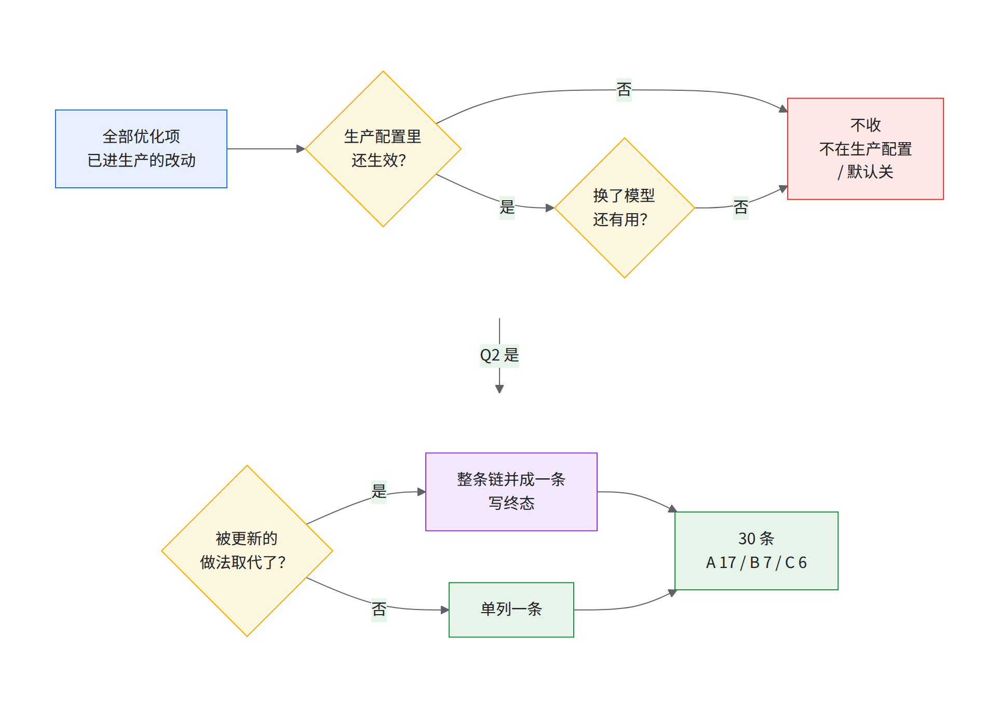
「默认关」＝默认关且没证据；纯 bug 修复不单列，离不了的写进「前置 / 坑」。
口径：
- 数字出处为 01–09，与其他章冲突以 01–09 为准；算出的写 [推断：算式]，拿不准写「不确定」或「未核」。
- 步时用指数：大号模型以单片 BF16 最初基线 ＝ 100，小号模型以开发期起点 ＝ 100，取整数，越小越快。只在单个 A/B 里出现的数只给百分比。百分比 ≥ 10% 取到 5 的倍数，3–10% 取整，2–3% 写「2–3%」或「约 2%」，1–2% 写「1–2%」，< 1% 写「不到 1%」。
- per device（1 颗 v7x 芯片 = 2 device），「芯」指芯片。
- 「生产」＝这套配方在原集群上的配置、代码与实测（小号模型的 CI 数也算这里）；「复现」＝本书照生产配置在自己集群上跑出的实测，见 09 §3.1。复现分四组：
- 2 片 JIT 消融：从全配置逐刀关（09 §6.2），HLO 通信重排在 JIT 校验模式下强制关。
- JIT 对照：1 片基线、2 片 DCN 开关 A/B。
- 单片 AOT 复现：单片（1 × 4x8x8）AOT 复现满配（指数 37），阶梯和 knockout 都在这组上做。
- 10+ 片独立复现：照 10+ 片 AOT 中间档（指数 47）重跑；「10+ 片 JIT 基线」指 HLO 通信重排关的 10+ 片 JIT 配置。
- 「阶梯第 N 级」＝单片 AOT 复现上从满配（指数 37）倒着累积拆；「knockout 只关它慢 X%」＝相对 knockout 基线（09 第 1 级，指数 45，即满配再关 XLA pipeliner）只关这一项；pipeliner 那一项就是满配 37 → 45 本身。
- stats 里的指数 51 → 37 只是 HLO 通信重排一项，不是 A 档整包。
总览
收益量级：大 ≥ 10%｜中 3–10%｜小 < 3%｜前置 = 不提速、别的依赖它｜未量化 = 没端到端数。生产与复现的数取较可信者。
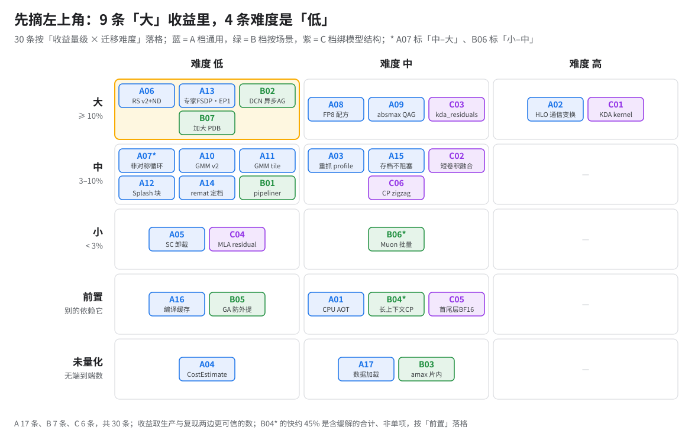
读图：A02、C01 收益大但难度高，排专门时间；带 * 的口径争议见各条。
只有生产侧的数（复现没单独量，要在自己模型上量；各条口径不同，不能横着相加）：A03（旧 trace 没跑）、A04、A05（阶梯各级都开着）、A13（大号模型生来如此）、A15–A17（单片 AOT 复现用 synthetic 数据）、B04、B05、B07、B08、C01–C03（kernel 版本钉在镜像里）、C05、C06。
代码在哪（按键名 / 函数名在上游 MaxText main 里逐个核对）：「平台 flag」只改 LIBTPU_INIT_ARGS / XLA_FLAGS；「上游没有」的按各条「怎么开」自己重写。A04、A10、A11、A12、A15b、A16 的上游 PR 号未核。
| 代码在哪 | 条目 |
|---|---|
| 平台 flag | A05、A06、A07、B01、B02、B08 |
| 上游已有 | A04（JAX pl.CostEstimate，GMM v2、Splash 已自带）、A10、A16（jax_cache_dir）、B07（纯配置） |
| 上游有键 / 本体，配套需自行实现 | A01（train_compile 与加载修复 maxtext#3872、#3877 在上游；CI / JobSet 流程要自己搭）；A11、A12（tile / sa_* 键在上游，扫描脚本上游没有，手扫步骤见各条）；A15b（MTC 本体在上游，device-id 恢复要自己补）；A17（.bin/.idx mmap 读取在上游；SharedMemory 索引、TensorBoard 轮转要自己写） |
| 上游有相邻键，主体需自行实现 | A08（缺 FP8 格式开关、GMM 权重分组量化开关、首尾层 BF16 三键；上游 fp8_full 本身就是前向 E4M3 / 梯度 E5M2）；A13（缺 GMM 内强制权重 gather 开关）；A14（缺 MoE 路由索引的 remat 键）；B04（context_parallel_strategy 上游有，计数有没有同样修未核）；C06（context_parallel_load_balance 上游有） |
| 上游没有，需自行实现 | A02、A03（整套 HLO 改写工具）、A09、A15、B03、B05、B06、C01–C05（上游没有 KDA；C05 的 skip-simplify 写法上游别的模型有先例） |
建议的迁移顺序
每步都在新模型上实测，别套这个模型的数。
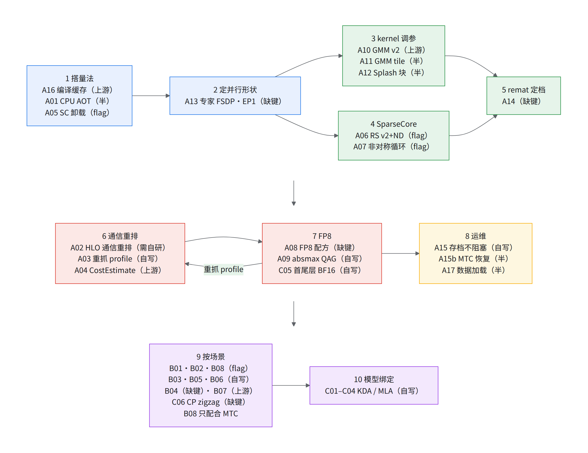
读图：第 2 步的形状决定后面所有调参 [推断：没有「形状一变、后面全部重调」的实例]。括号里是代码在哪（同上面「代码在哪」表）：上游＝上游 MaxText 有；半＝上游有键或本体，配套要自己做；缺键＝主体用上游键，另缺几个上游没有的键；自写＝上游没有，要自己写；flag＝只改 LIBTPU_INIT_ARGS / XLA_FLAGS。
- 第 2 步拆开看：
ici_expert_parallelism=1、FSDP 拉满、shard_exp_on_fsdp=true、allow_split_physical_axes=false上游有；显式权重 gather 这个功能上游没有（生产用 GMM 内强制权重 gather 开关打开它）。只开上游那几个，DP > 1 时会留下全 mesh AR（A13「只开上游键能拿多少」，有判断法）。 - 第 7 步拆开看：A08 只用上游能拿到前向 E4M3 / 梯度 E5M2 那半套，per-expert scale 和首尾层 BF16 拿不到；A09 只用上游拿不到验证过的 FP8 QAG（A09「只用上游时」）；C05 要自己拆 scan。
- 3–5：扫描脚本上游没有，要手扫（A11、A12）；SC 默认值按新 libtpu 重确认；remat 给第 6 步留 HBM。
- 9–10：多片 B01–B03；长上下文 B04（+ C06）；GA > 1 B05；Muon B06；HBM 富余 B07；没 KDA 跳过 C01–C03；Splash 才考虑 C04。
场景开关表
三个开关的结论集中在这里。「未单独测」＝没有只切这一项的 A/B，书里的数都绑着别的改动。
XLA collective pipeliner（上游 pass，B01）
- 结论：单片 FP8 开，跨 DCN 关；单片 BF16 没有可信的方向，自己 A/B。
- 判据（别按 dtype / 片数记）[推断]：pipeliner 开着编一遍，看编译期 HBM 余量够不够；再看 cost profile 含不含 DCN。两样都没问题再 A/B 开，任一不满足先关。上面的「单片开、跨 DCN 关」是这两样在生产集群上的结果，详见 04 §6。
- 默认：照生产现行规则——BF16 关、单片 FP8 开、跨 DCN 的 FP8 关。
- 例外 · 单片 BF16：规则是关，但唯一的对比是 decomposer 和 pipeliner 两个 pass 一起关，反慢约 3%，方向和规则相反。pipeliner 单项未单独测。
- 证据 · 单片 FP8：复现满配（指数 37）关它，慢约 25%（FP8 + HLO 通信重排）。
- 证据 · 多片：FP8 + HLO 通信重排下 2 / 8 片关掉各快约 9%（复现）。BF16 多片关是为了 AOT 放得下，步时未单独测。
- 怎么关：
XLA_FLAGS里--xla_disable_hlo_passes带上它。多片开着的显存代价见 B01「为什么」。 - 单片 BF16 怎么补测：
- 先编：对照组两个 pass 都关；实验组只去掉
collective-pipeliner-forward、decomposer 继续关（即 B01「只关 decomposer」，2 片 JIT 上编译期 HBM 超上限，1 个样本；单片未测）。各 AOT 一次比 temp 和实机峰值，放不下就不用比步时。 - 再跑：比稳态步时中位数，多跑几次估噪声。落在噪声带里按显存余量选（关的那份给 A02 留的空间更多 [推断：由 09 里开 / 关的 temp 差推出]），超出才按快的定；阈值自定。
- 看机理：比 scan 每次迭代开头的权重 AG，开着时应和上一层计算叠在一起，关掉后露在迭代开头 [推断：由 pipeliner 的作用推出，没人按这个验过]。
- 先编：对照组两个 pass 都关；实验组只去掉
RS 双 SC：--xla_tpu_use_single_sparse_core_for_reduce_scatter_offload=false
- 结论：多片开（生产在用），单片维持单 SC，两边都没有端到端的单项 A/B。
- 默认：单片 FP8 用单 SC（生产 nightly）；单片 BF16 用哪种未核（03 §17）。
- 例外 · 多片：10+ 片生产用双 SC，单次 RS 快约 15%。端到端和几十个改动绑在一起，未单独测（03 §10）。
- 证据 · 单片：BF16 未单独测。FP8 双 SC 的指数 34 还叠了新 profile 和未进生产的双 SC 通信搜索，未单独测。相关的另一项改动（placement 保留 XLA 的双 SC 分配）整步回退约 2% [推断：按单片步时折算]；它改的不只是这个 flag，不能当这条的单项数。
- 两端写的不一样以谁为准：最稳是两端写同一个值。
- AOT 下以编译端为准：RS 分几颗 SC 已写进程序；上游 AOT 文档说运行时换 flag「probably run silently with the environment you compiled in」[推断：文档讲的是一般 flag，没点名这一个]。JIT 下以训练进程的
LIBTPU_INIT_ARGS为准。 - 10+ 片生产两个 flag 都写着，像是编译期这条生效 [推断：只看了 profile，冲突规则未核]。
- 多模态版出现过两端不一致的配置（运行时
true、picklefalse），同配置下有 OOM，因果未定（相关 flag 见 04 §10 注 4）。
- AOT 下以编译端为准：RS 分几颗 SC 已写进程序；上游 AOT 文档说运行时换 flag「probably run silently with the environment you compiled in」[推断：文档讲的是一般 flag，没点名这一个]。JIT 下以训练进程的
- 怎么看生效：别看配置看产物——profile 里 RS 出现在两条 SC lane 上（编译期产物里能否直接读出 SC 分配，未核）。
--xla_tpu_prefer_async_allgather_to_allreduce=true（B02）
- 结论：多片开；单片开着无害与否没人测过。
- 默认：生产共享 flag 文件默认开，单片、多片都开。
- 例外 · 单片 BF16 / FP8：可能拖慢单片 1–2% [推断：按单片步时折算，无对照]，未单独测；想关就自己切一次比稳态步时。
- 证据 · 多片：生产侧小号模型 DP2 快约 20%、复现 2 片 JIT 不到 1%（噪声），见 B02；10+ 片未单独测。
- 怎么看生效：它治的是 decomposer 把 AG 改写成 AR(add) 的情形（03 §3）。看 HLO 里跨 DCN 的那批 AR(add) 是否换成了 all-gather [推断：由机理推出，没人按这个验过]。
三张卡片共用的几条
- 自写的 placement pass（A02）和上游 pipeliner 是两个东西，上面只切上游那个，A02 照开（02 §16.1）。02 里「两套一起开」对应单片 FP8 [推断：按现行规则，只有这一格两个都开]。
- 有干净 A/B 的只有 pipeliner 的单片 FP8 和多片两格，其余都是「未单独测」。
- 补「未单独测」的格子：同一份源码、同 cost profile、同 AOT 配置只切一个 flag，比稳态步时中位数，多片看最慢 worker；profile 在同一个 SC 设置下抓 [推断：profile 反映的是抓取时那份配置的调度，见 A03]。
换场景时哪些结论会翻
书里的数几乎都在 EP=1、FSDP 拉满一片、序列 8K 外加本书的自写件（HLO 通信重排、QAG 等）下测的。下面四种情况只给判据和测法，没有实测数；[推断] 由机理推出。换了前提先抓基线 profile、按暴露等待重排，别照搬顺序。
EP > 1
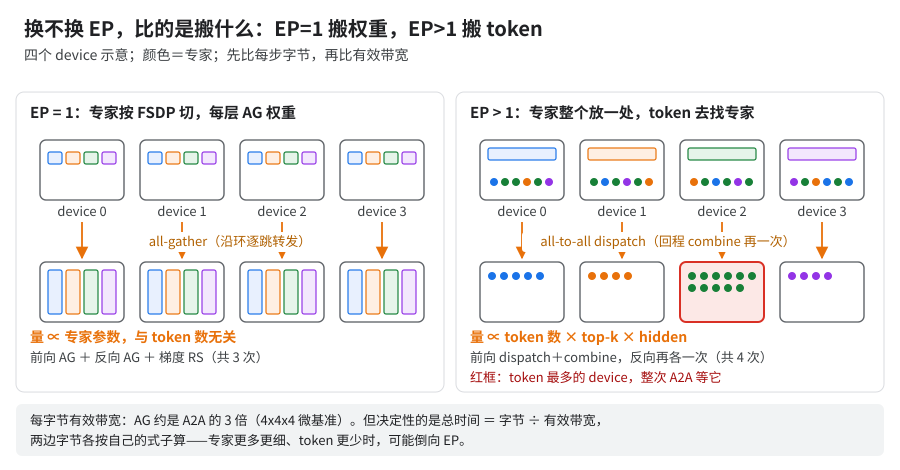
读图：主线「搬权重不搬 token」见 01；先比每步字节（下表第一行），再看带宽。
| 书里的结论 | 依赖的前提 | EP > 1 时可能怎么翻 | 怎么测 |
|---|---|---|---|
| 拒绝 EP（01、A13 并行形状表） | 专家权重 AG 比 token A2A 便宜 | 搬权重随专家参数走、与 token 数无关；搬 token 随每 device token 数 × top-k × hidden 走。专家更多更细、token 更少时可能倒向 EP [推断] | 同片同 batch，EP=1 / EP=2 各编一次，比暴露等待和步时；别只算字节 |
| 梯子顺序（09）：QAG、placement、tile 排前面 | 主要通信是专家权重 AG / RS | 换成 A2A，placement 收益、QAG 位置都要重排 [推断] | 抓 EP>1 基线 profile，按暴露等待从大到小排 |
| FP8 值不值（A08、04） | FP8 省的是专家权重 AG 字节（要配 QAG） | 每 device 只存 1/EP 专家，省字节大头变成 token；上游 moe_quantize_token_all_gather 只对 RoE、要 fixed 激活标定（A08）[推断] |
只切 quantization，分别看权重 AG、A2A（或 RoE token AG）、量化 fusion |
| absmax QAG（A09） | shard_exp_on_fsdp、EP=1 |
EP>1 的 FP8 dispatch 没实现；上游三维权重路径 gather 不 gather expert 轴未核 | HLO 里看专家权重 AG 的 replica group 覆盖哪些轴、dtype 是否 f8 |
| RoE 默认关（A13） | RoE 只在 EP>1 生效 | 把 A2A 换成 EP 轴 AG + RS，吃到「AG 比 A2A 快」；生产侧 EP>1 测过快约 8%（02 §3）、小号模型 1–2%，旧配方 | use_ring_of_experts 开 / 关各跑一次；约束见上游 configs/types.py 校验 |
| GMM tile（A11） | 按 EP=1 每专家行数扫的 | 每专家 token 数变，最优 tile 跟着变 | 按 A11 重扫 |
| 每 device DCN 量只看 FSDP 度（B02、03） | EP=1，专家梯度只按 FSDP 切 | 片内 EP 把专家梯度再切 EP 份，DCN 归约量按比例变小，非专家部分不变 [推断] | 在 /device:CUSTOM:Megascale Trace 平面数每步 DCN 字节，EP 前后各一次 |
EP>1 才会碰到的：
- mesh 轴怎么排：按 A13 的拓扑原则（高流量逻辑轴贴 core 轴、物理轴尽量不切），EP>1 时 A2A（或 RoE 的 AG）最密，expert 轴该优先贴近 [推断]。上游轴顺序看
configs/base.yml的mesh_axes；换法各编一次比步时。 - EP 跨 DCN（
dcn_expert_parallelism）：没测。DCN 每次传输有固定开销：同一程序里串行摊下来约 9.6 ms/个，单独发起一次约 21 ms（后者含 Python 派发、取所有进程里最慢的，03 §2）。训练步里的 A2A 属于前者，估可行性按约 10 ms/次算；每层两次，大概率不划算 [推断]。要试先在 2 片上比它 =2 和 DCN DP=2。 - CP 和 EP>1：CP>1 配 EP=1（B04）是这套配方的约定，不是框架硬限制。上游有
custom_mesh_and_rule=ep-as-cp（MoE 以外 expert 轴当 CP）和cp-as-ep（MoE 里 context 轴当 EP）两套规则（configs/custom_mesh_and_rule/），没人测过；要用先过 B04 计数检查，再数值对拍。 - 双轴 RS 的分片顺序：非专家权重的梯度 RS 会变成 fsdp × expert 双轴，判法见 13 §5.2。
序列变短（如 8K → 4K）
读图（示意）：下表第一行的机理 [推断]。
| 书里的结论 | 依赖的前提 | 可能怎么翻 | 怎么测 |
|---|---|---|---|
| 通信藏得住（A02、02） | 每层计算够长，盖得住专家权重 AG / RS | EP=1 时权重 AG 的字节和序列无关，计算却跟 token 数减少，暴露比例上升 [推断] | 同 per-device token 数（把 batch 加倍）和同 batch 两组各测；profile 看暴露等待占比 |
| cost profile（A03） | 按 8K 抓的 | 每个 op 的时长都变了，旧 profile 会把调度带偏 | 按 A03 用新长度重抓 |
| Splash 块参数（A12）、GMM tile（A11） | 按 8K 形状扫的 | 最优块 / tile 随长度和每专家 token 数变 | 按 A11、A12 重扫 |
| remat 档位（A14） | 8K 激活量 | 激活减半，可以少重算、多存 | 06 §2.3 的判据 |
| 批大小（B07） | 8K 下 HBM 余量 | 余量变大，加 per-device batch 可能更划算 | 按 B07 扫，终判看实机峰值 |
MLA 头配置不同
| 书里的结论 | 依赖的前提 | 可能怎么翻 | 怎么测 |
|---|---|---|---|
| MLA 是小头、优化只有一刀（05 §8） | 本模型的头数、头维和 MLA 层占比 | 头更多、头维更大，或 MLA 层占比更高时，注意力占比上升，Splash 调参和 residual 取舍变得要紧 [推断] | 先在 profile 里量注意力占步时多少，再决定要不要做 A12、C04 |
| MLA Splash 残差放置开关设为 device（C04） | 存这几个 residual 放得下 | 头维变大，存的显存跟着变大 | 开 / 关各编一次，比编译期 temp 和步时 |
CP 用 a2a（B04） |
头数能被 CP 度整除 [推断，见 05 §6] | 头数少时 CP 度受限 | 换配置前先核整除 |
| FLOPs / MFU 口径（01） | 框架的 MLA FLOPs 分支 | 头配置变，自报 FLOPs 是否跟着对，要自己核 | 按 13 §3.2 手算一层对拍 |
只用上游 MaxText
各件的上游现状与替代写在各条，这里只列去哪看：
- 上游没有：placement（A02，knockout 只关它慢约 10%；先量暴露等待估能拿多少，或按骨架重写）；GMM 内强制权重 gather 开关（A13 判断法）；私有的 DCN all-reduce 合并 pass（别照抄
=0，B02）；首尾层 BF16 键（C05 拆 scan）。 - 上游只有一半：QAG 只在
fixed标定下有（A08「只用上游」，收敛风险；不带 QAG 的 FP8 默认不上）；CP 计数修复是否已修未核（B04 先核计数）。 - 上游有：CPU 交叉 AOT
train_compile（A01「只用上游的写法」）。
A 档：通用必做（与模型结构无关）
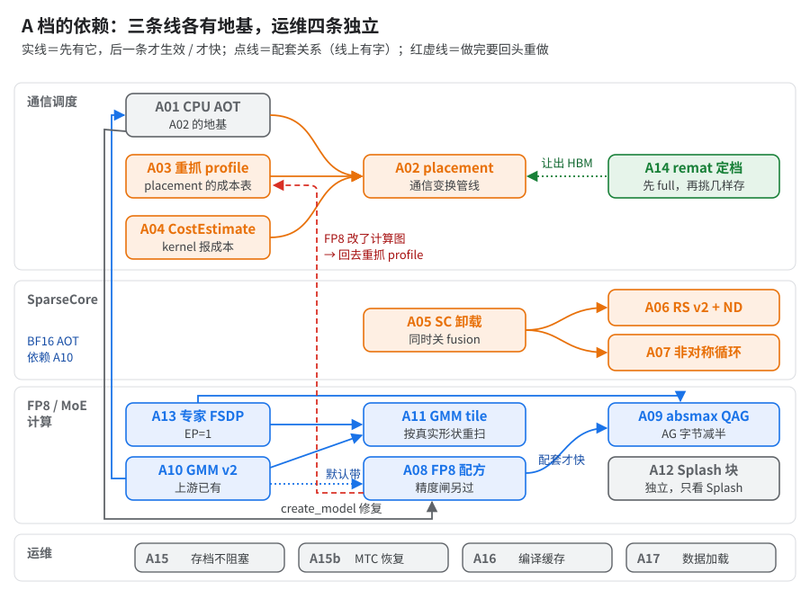
读图：运维四条上长跑前做；FP8 那条红虚线就是迁移顺序里第 7 步回第 6 步。
A01 · CPU 交叉 AOT 编译流程（在 CPU 上把 TPU 训练步编好，再上卡加载）
- 做什么：CI 改走 CPU-only 交叉 AOT，JobSet 经 GCS Fuse 加载编好的 executable；配套 CPU 节点池、两端 flag 对齐、kernel 平台选择。
libtpu_init_args只在 AOT 侧生效。 - 前置 / 后续：无前置。A02 / A03 都依赖它（生产只在 AOT 下开 HLO 通信重排）；BF16 配方在 CPU AOT 下能编过又依赖 A10（FP8 走 megablox 的老 GMM 路径，不依赖；见A 档依赖图）。
- 收益：本身不提速，是前置。编译机从 c3d-highmem-30 换到 c4-highcpu-48，编一次从约一个半小时降到一小时出头（快约 30%）。复现跑通（09 §2），20 核机器编一次近两小时，其中 HLO 通信重排二十多分钟。
- 怎么开：AOT 编译脚本，
JAX_PLATFORMS=cpu、compile_topology=tpu7x-512、compile_topology_num_slices=<片数>；训练端加载 pickle。 - 只用上游 MaxText 的写法（对照上游
docs/guides/monitoring_and_debugging/features_and_diagnostics.md的 AOT 例子和trainers/pre_train/train_compile.py）：
# 编译端：一台 CPU 机器
export LIBTPU_INIT_ARGS="<和训练端逐字相同的一串>"
python3 -m maxtext.trainers.pre_train.train_compile <模型 yml> \
compile_topology=tpu7x-512 compile_topology_num_slices=<片数> \
compiled_trainstep_file=<产物>.pickle <与训练端相同的形状键>
# 训练端：每台 host
export LIBTPU_INIT_ARGS="<同上>"
python3 -m maxtext.trainers.pre_train.train <模型 yml> compiled_trainstep_file=<产物>.pickle <同上>
tpu7x-512在上游utils/accelerator_to_spec_map.py对应tpu7x:4x8x8；compile_topology_num_slices必须为正（train_compile.py里 assert）。- flag 的两条通道：
LIBTPU_INIT_ARGS上游没有配置键，两端用环境变量传、必须逐字一致（生产两端读同一份共享 flag 文件）；上游文档写明不一致时「probably run silently」。- 配置键
compile_xla_flags（configs/base.yml）经max_utils.parse_libtpu_flags_to_dict拆成compile(compiler_options=...)，types.py注明「for compilation only」，不进运行时。书里的 flag 走哪条通道生效没人逐个核过，两边都写最稳 [推断]。 --xla_disable_hlo_passes（B01）走XLA_FLAGS，上游 GPU 配置脚本也这么写（如configs/gpu/a3/llama_2_7b/1vm.sh）。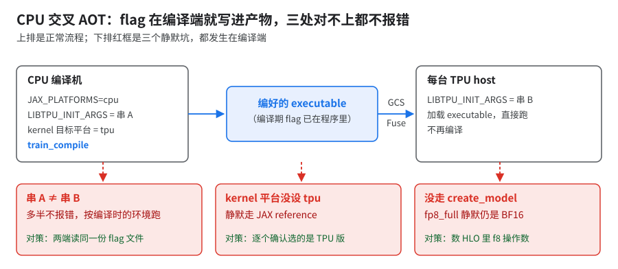
读图：下面三条坑在图里各占一格。
- 坑：
- 必须走
model_creation_utils.create_model，否则quantization=fp8_full静默仍是 BF16。 - kernel 库目标平台环境变量设
tpu，否则 kernel 静默走 JAX reference（C02）；运行时变化的输出形状要编译期固定。 - 判 OOM「successfully」不作数：
CompiledMemoryStats.temp_size_in_bytes≤ 94.74 初筛，终判实机peakBytesInUse≤ 94.74（上游train_compile.py的Memory analysis行可读）。- 另有一道「每日 AOT 闸」（total ≤ 92 GiB，未进生产），更严、会误拦；它和 placement 准入线（96 − 4 GiB，A02）数值相同、量的东西不同，见 06 §1「92 和 94.74 别混」表。
- AOT 加载两坑（上游已修；GA = 1、非 Muon 时测不出来，换配方才炸）：
Expected dict, got None：GA > 1 时编译脚本算出的params_shardings是 None，改用带优化器状态的 sharding 推导重算（maxtext#3872）。- 「requires an active mesh context」：Muon 打开 NS（Newton-Schulz 迭代）矩阵复制开关时
load_compiled外面没包jax.set_mesh，包上即可。 - executable 序列化用原始 bytes 而不是 pickle（maxtext#3877 的一部分）；同一 PR 里其余的反序列化修复生产配置未用，搬时自己核。
- 必须走
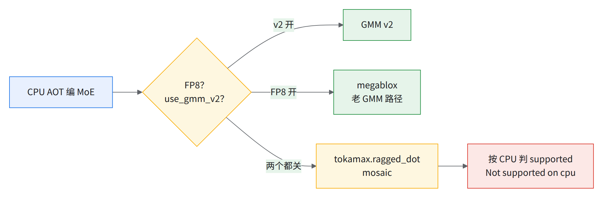
读图（CPU AOT 下 MoE 选哪个 kernel；阶梯里把 GMM 换回 v1 那一步在 CPU 上编不了，就是这条路）：BF16 配方的 CPU AOT 事实上依赖 GMM v2 [推断：由调用链得出，代码里没明说]。
- 迁移难度：中，逐个核对自定义 kernel 能否在 CPU 上 lower。
A02 · HLO 通信重排：小 RS 合并 + two-stage RS + placement（需自研）
- 做什么：在 XLA 调度前后改集合通信的切法、落点和调度顺序。移植时需自研同类 pass，理念见 02 §7，这里只给收益、判据和要守住的前提。
- 前置 / 后续：前置 A01（AOT）、A03（cost profile）、A04（kernel 报成本）；A14 要给它留显存。FP8（A08 / A09）改了计算图，要回头重抓 profile 再编。
- 收益：
- 复现：单片 AOT 只多开 HLO 通信重排，指数 51 → 37，快约 30%（09 §2）。钱几乎全在 placement：knockout 只关它慢约 10%，阶梯里拆它也是约 10%，两种拆法只差不到 1%。
- 生产：小号模型 64 芯快约 10%；大号模型 BF16 单片（与 CPU AOT、full remat 同开，单项未拆）指数 73 → 55，快约 25%。
- 怎么考虑的：XLA 自带调度器排通信有先天限制（02）：看不见真实耗时、不按 SC 队列建模、不管跨迭代。libtpu flag 只能调到这一步（02 §6），剩下的暴露通信只能自己在 HLO 上挪。
- 上游能替代到哪一步：只有 XLA 自带调度器 + libtpu flag，placement 没有替代。只做最小版（只挪 start / done）要守的约束和验收见 02 §18；能拿回那约 10% 的几成，未测。
- 生产上几个值得参考的量级（自研时作起点，换模型要重扫）：placement 只摆不小于 192 MiB 的集合通信；two-stage RS 只拆 1 MiB – 500 MiB 的 RS；跨迭代 carry 上限 8 GiB；HBM 准入按每 device 96 GiB 减 4 GiB 余量。
- 96 GiB ＝ 每 device 标称 HBM（06 §1），比运行时上限 94.74 GiB 大，差额由 4 GiB 余量兜住 [推断：实际按 96 − 4 GiB 准入，下文称「placement 准入线」，没人量过余量够不够]。
- 换模型重看余量：准入通过而实机 OOM 就加大；实机
peakBytesInUse离 94.74 很远可收小、给 placement 多留空间，改完重跑实机峰值。
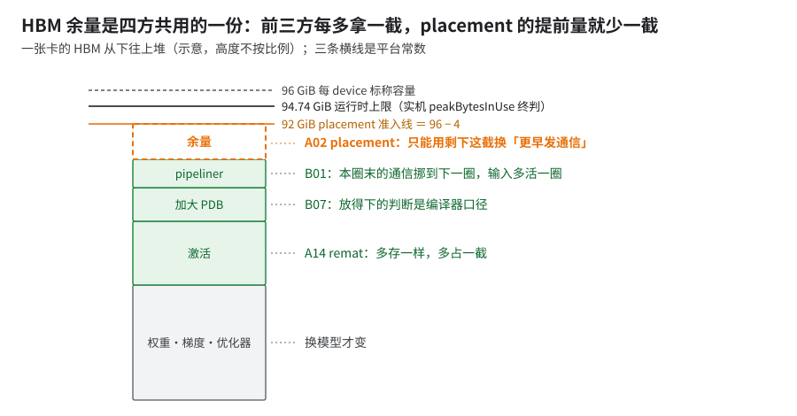
读图：A14、B07、B01 和 placement 抢的是同一份余量，挪任何一方都要重看另外三方。
- 怎么判断生效了：看 pass 自带的计数（选中几对、动了几条指令），0 就当没生效；HLO dump 里找 placement 的指纹（09 §2.1）；XProf 里 TensorCore 等 done 的时间下降。
- 坑（先做什么，否则会怎样）：
- 先跑通 A01：生产只在 AOT 下开 HLO 通信重排（pass 本身 JIT 也能跑，只是启动时多编一遍，见 02 §16.1）。
- 先按 A03 抓好 cost profile，否则 placement 只能用粗估成本排，旧 profile 还可能更慢。
- pass 没能接进编译时要直接报错，别只打警告：否则 HLO 通信重排静默不开。
- AOT 编译和训练加载用同一套 HLO 通信重排配置，否则静默不启用。
- 换量化方式先复查两处，否则静默变慢或估错显存：
- placement 必须认得 QAG 前那串量化：认不出时，decoder 循环里的 FP8 QAG AG 一个都不会被调度。
- 显存估算器必须覆盖全部 FP8 类型：漏掉的按 0 字节算（有 6 种类型会漏；生产用的两种认得 [推断]）。
- 多片先确认有本片数的 cost profile，否则调度带偏（多片见 B01）。跨 DCN 的 DP 与 HLO 通信重排同开，要有本片数的 profile、HBM 也要放得下；满足后就是 10+ 片 AOT 中间档（指数 47，03 §8）。
- 多片调度另依赖五项改动（two-stage RS 按片内拓扑解、封闭 DCN region 私有搜索、DCN 打包算子按最小代价计、DCN-only 流水限在锚点后继链、前向 DCN 统计量 hoist）；这五项各自值多少没有 10+ 片单项实测（03 §11），「最新状态」里 10+ 片指数 41 含不含它们未核。
- two-stage RS 的输入上限要自己扫。没有结论：一组对比测得 500 MiB 比 100 MiB 慢 1–2%，另一组测量也倾向 100 MiB；生产仍是 500 MiB。扫法：同一份源码、同 profile 只改这个值，至少扫 100 / 500 MiB，比稳态步时中位数；差 1% 上下多跑几次看噪声。
- 跨迭代 DCN 流水只是建模估计，未实测，无端到端数，别当收益算。
为什么：小 RS 合并 / two-stage RS 单测的正负号到 knockout 里会翻，因为它们是交互项，不是独立增益。它们只改 RS 的条数和形状；值不值，要看 placement 能不能把这些 RS 塞进计算空当，以及 pipeliner 和 SC 队列里的先后顺序有没有先占了位置。knockout 里钱几乎全在 placement（约 10%），阶梯与 knockout 对它只差不到 1%。
A03 · cost profile 按当前代码重抓、定期刷新
- 做什么：placement 排通信靠的成本表（cost profile）随代码刷新：BF16 / FP8 各自刷新，AOT 编译用的 profile 同步更新；trace 按 TPU plane 重导后再用。
- 前置 / 后续：无前置，只给 A02 用（只有 placement 读它）。后续：模型、kernel、flag、片数任一变了都要回到这里重抓；FP8（A08）、多片（B01）尤其。
- 收益（生产侧的数，复现没跑旧 trace）：
- 同源码只换 profile：快约 7%。这是唯一干净的单变量数。
- 按 TPU plane 重导：不到 1%。
- BF16 两次刷新分别快约 20% 和 9%，但两边源码版本不同，非隔离 A/B。
- 反例：陈旧 profile 比新的慢约 20%（两边源码也不同）。
- 10+ 片大号 FP8：代码不动、只换同配置上采的 10+ 片 trace，步时中位从指数 46 到 42 / 41（快约 9% / 10%；cube 也换了，非单变量）；profile 自己的口径快约 10%（03 §9）。生产配置里 10+ 片 FP8 用的是更新的一份 profile，步时未核。
- 怎么用：编译时把 trace 作为 placement 的成本输入。成本解析属于 HLO 通信重排（同 A02，需自研），从 trace 事件取每条 HLO 指令的耗时和 SparseCore / DCN 资源占用。
- 按 TPU plane 重导：自动导出的 trace 成本解析器读不全，要按 TPU plane 重导，保留成本所需的事件时间和 HLO 字段；没有现成脚本，上游也没有。
- 自己做：XProf trace（Chrome / Perfetto JSON）按 plane 拆开再写回，要留下 TensorCore、SparseCore 两条线的逐条事件时长和完整 HLO 指令文本（02 §8）。
- 验收：重导前后各建一次成本表，重导版 SparseCore 条目应非空、命中数不比自动导出版少 [推断：没有现成的验收标准]。
- 按 TPU plane 重导：自动导出的 trace 成本解析器读不全，要按 TPU plane 重导，保留成本所需的事件时间和 HLO 字段；没有现成脚本，上游也没有。
- 抓一份 profile 的步骤（只用书里已有的做法串起来，顺序本身是 [推断]）：
读图：placement 不会自己量耗时，只信表，所以这是每次改代码后的例行步骤。① 已有旧 profile 就带旧的编，新模型第一份用 HLO 通信重排关 [推断]；② 多片沿用单片会带偏（02 §16.3），10+ 片自采见「收益」（03 §9）；③ 见上一条。
为什么：调度器排通信像照一张旧时刻表发车（比方）：它看不见真实耗时，只认成本表。通信提前多少发、叠在哪段计算下面，全按表里的数排；表旧了窗口就放错——早了多占 HBM 和 SC 队列，晚了 TensorCore 干等，编译器一句不报。
GPU 上相当于：JAX / XLA GPU 的 PGLE（profile-guided latency estimator），同一类调度器拿 profile 定提前量。
把握：源码证实 · 出处：开源 XLA
latency_hiding_scheduler.h（LatencyEstimator接口）；详讲见 02 §8
A04 · 自写 Pallas kernel 必须带 pl.CostEstimate
- 做什么：给每个自写的 Pallas kernel 报计算量和访存量。KDA kernel 补上了
pl.CostEstimate；GMM v2 自带（kernels/megablox/pallas_mosaic_tpu_v2_gmm_kernel.py），Splash 在layers/attention_op.py传fwd_cost_estimate/bwd_cost_estimate。 - 前置 / 后续：无前置；A02 placement 和 XLA 调度器都依赖它排对位置。
- 收益：没有单独的数。大号模型 FP8 单片上，过期 profile + 缺 CostEstimate 一起修掉后快约 15%；两因混在一起，不能单独归因。FP8 下缺它会排错。
- 怎么开：
pl.pallas_call(..., cost_estimate=pl.CostEstimate(flops=..., transcendentals=..., bytes_accessed=...))。 - 坑：不透明 custom call 没成本，XLA 调度器和 A02 placement 会排错。KDA CostEstimate 开关默认关、没证据，不收。
为什么：不报成本的 kernel，调度器就当它几乎不花时间。
- 机理：开源估算器给这类 kernel 记 1、一次异步通信记 5000（抽象单位不是 cycles，看比值：kernel 被当成一次通信的五千分之一长），于是以为它盖不住任何通信，把通信提早或把 done 排错位置。
- 填什么：
CostEstimate填的不是耗时，是 flops、transcendentals、bytes_accessed、remote_bytes_transferred 四个量，写进 custom call 后端配置由后端换算；照实填即可。- 判据：TPU 后端怎么换算、cost profile 命中时是否覆盖它，未公开；同一 kernel 给两组不同的 CostEstimate，看 HLO 调度里前后 start / done 的位置动不动。
把握：源码证实 · 出处：jax
pallas/core.py::CostEstimate四个字段、tpu_custom_call.py写 backend_config；开源 XLAlatency_hiding_scheduler.cc（ApproximateLatencyEstimator::NodeCost记kLowCost＝1，GetLatencyBetween对异步对记kHighLatency＝5000，注释「Currently this is in abstract units」）；详讲见 05 §2
- 迁移难度：低，每个 kernel 几行，算对 flops / bytes。
A05 · 集合通信卸到 SparseCore（同时关 async collective fusion）
- 做什么：把 AG / RS / AR 交给 SparseCore 跑，TensorCore 只管算；同时关掉 TensorCore 上的 async collective fusion。gather / scatter 各分 1 个 SC。开关收在生产共享 flag 文件里。
- 前置 / 后续：无前置。A06、A07 都在它上面；layer scheduler 要另开 aggregator（见「坑」）。
- 收益（生产侧的数；复现阶梯各级都开着，没拆）：SC offload 1–2%（FSDP=32, DP=4）；DCN DP overlap 1–2%（FSDP=32, DCN-DP=2）。反过来看更直观：64 芯上关掉 SC offload 慢约 60%（A13 并行形状表）。
- 怎么开：照抄生产共享 flag 文件，
LIBTPU_INIT_ARGS里是：
--xla_tpu_enable_sparse_core_collective_offload_{all_gather,reduce_scatter,all_reduce}=true
--xla_tpu_enable_async_collective_fusion=false
--xla_tpu_enable_async_collective_fusion_multiple_steps=false
--xla_tpu_enable_async_collective_fusion_fuse_all_gather=false
--xla_tpu_enable_async_collective_fusion_fuse_reduce_scatter=false
--xla_tpu_enable_async_collective_fusion_fuse_all_reduce=false
--xla_tpu_overlap_compute_collective_tc=false
--xla_tpu_num_sparse_cores_for_gather_offloading=1 --xla_tpu_num_sparse_cores_for_scatter_offloading=1
--xla_tpu_use_single_sparse_core_for_reduce_scatter_offload=false # RS 双 SC：多片生产加，单片 nightly 不加
- 坑：
- SC offload 与 async collective fusion 互斥，必须一起改（见下图）。
- 同文件
--xla_tpu_dvfs_p_state=7是功耗档：测 kernel 基准时用，生产照抄要先 A/B。 --xla_tpu_scoped_vmem_limit_kib保持 65536：改成 49152（48 MiB）小规模 8K 只快 1% 左右（「试过不行」表里是另一次测量），小规模长上下文 CP8 误编译崩溃，没进生产；机制未公开（开源 XLA 和 Pallas 文档都没有这个 flag）。- RS 双 SC（编译期 flag，代码块最后一行）：开不开、两端写法以谁为准、怎么看生效见场景开关表。
- 开 layer scheduler 必须同时开
--xla_tpu_enable_sparse_core_collective_aggregator=true，否则编译报Latency hiding layer scheduler requires sparse core collective aggregator to be enabled。aggregator 是 SC 上做规约的部件，offload 开关只是把通信交出去。 - 备用：
--xla_tpu_rerun_latency_hiding_scheduler_post_sc_assignment=true（分完 SparseCore 再跑一遍 LHS），针对「MoE 权重 AG 从第 2 个 scan 组起暴露」。- 状态：不在生产共享 flag 文件里，没有验证过的值。唯一的数是另一个 libtpu 版本上和 RS 双 SC、补
cost_estimate三样一起开，快约 6%，峰值显存多占一截，单项未单独测（02 §6）。 - 生效特征：开前开后各抓 profile，看后几组 scan 里专家权重 AG 前的 TensorCore 等待是否缩短；同时比编译期 HBM。
- 状态：不在生产共享 flag 文件里，没有验证过的值。唯一的数是另一个 libtpu 版本上和 RS 双 SC、补
- Ironwood 上三个 offload 默认 true，照抄无害（可能冗余）；SparseCore 会预留约 1% HBM（flag 默认 0.01），换算前确认自己 libtpu 版本的默认值没变。
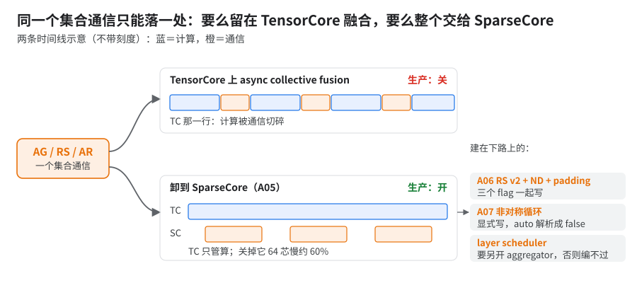
读图（示意）：右栏三条都建在 SC 这条路上；慢约 60% 出自 A13 并行形状表。
为什么：同一个集合通信只能有一种落地方式：要么留在 TensorCore 上和计算融合，要么整个交给 SparseCore 跑，两套开关只能留一套。SparseCore（SC）是每芯片 4 颗、每 device 2 颗的小协处理器，原本做稀疏 gather / scatter（README 速成）；通信卸到 SC 上，TensorCore 不用让出算力（上图）。
GPU 上相当于：把通信交给独立的 DMA / copy engine、不占 SM（类比，推断；SC 还能做规约，见上面 aggregator 那条，copy engine 只搬数据）。
把握：文档证实 · 出处：MaxText
benchmarks/xla_flags_library.py（注释原文「Either one of CF or SC can be enabled at a time」）；详讲见 02 §3
A06 · SparseCore reduce-scatter v2 + ND + padding
- 做什么：让 SC 上的 RS 走 v2 实现和多维（ND）路径，必要时自动补齐张量形状。
- 前置 / 后续：前置 A05（RS 已卸到 SC）。
- 收益：
- 生产：单个大 RS 算子快约 20%；大号模型端到端快 9%。
- 复现：大，knockout 只关它慢约 20%，knockout 第二（第一是 QAG）；阶梯里拆它慢 4%。关掉后 RS 退化成整张量 all-reduce、多占 temp；2 片 JIT 消融里只关它那组放不下 HBM（09 §3.2）。
- 怎么开：
--xla_tpu_enable_sparse_core_reduce_scatter_v2=true --xla_tpu_enable_sparse_core_collective_offload_nd_reduce_scatter=true --xla_tpu_enable_sparse_core_reduce_scatter_padding=true。 - 坑：生产的「约 20%」是单个 RS 算子的数，端到端是 9%，别混用。三个一起显式写，padding 的 auto 也是 false，缺它 v2 不生效；padding 把 RS 张量补齐到能走 ND 的形状（XLA 判 ND 的条件是「8×128 tile 数是 6 的倍数」，开三件套自动补齐；「每分片行数补到 48 的倍数」只适用于在 JAX 层手动 pad，且仍慢约 15%，见 02 §5）。
- 机制：未公开：「6 的倍数」这条在开源 XLA 源码和 JAX / Cloud TPU 文档里都没有说明，TPU 后端闭源。判据：换模型先算最大 RS 张量满不满足 tile 规则；开了没生效时，profile 里 RS 会退化成整张量 all-reduce、多占 temp（上面 knockout 那条）。详讲见 02 §5。
A07 · SparseCore 非对称集合通信循环
- 做什么：打开 SC 集合通信的非对称循环实现；生产默认开，libtpu 钉在 0.0.48。
- 前置 / 后续：前置 A05；libtpu ≥ 0.0.47。
- 收益：
- 复现：AOT + placement 下照样值钱，三种量法都是关掉后大 RS 每次慢约三成、全露在关键路径；knockout 只关它整步慢约 10%，阶梯里拆它也约 10%。
- 生产：微基准单个 RS 快约 25%。
- 怎么开：
--xla_tpu_collective_asymmetric_loop=true，libtpu ≥ 0.0.47。 - 坑：
- 结论：开，且必须显式写——不写时取 auto，而 auto 解析成 false。
- 「没收益」的反例：另一组 placement 与 libtpu 组合下，单个 RS 快约一成、整步却慢了不到 1%，原因没查。单片 AOT 复现 knockout 只关它，大 RS 每次慢约三成，否定了「叠 A02 没收益」；新模型以后者为准，在自己配方上关一次确认。
- 各处的百分比口径不同，别横比：约一成＝另一组 placement 配置下、two-stage 拆过的大 RS（02、08 另从 xplane 量到 8–9%）；约 25%＝生产微基准、不拆的整块 RS；也约 25%＝2 片 JIT 消融（HLO 通信重排关）；约三成＝单片 AOT 复现 knockout 只关它，满配（指数 37）上以这个为准。
- 机制：未公开：开源 XLA 源码和 libtpu 公开的 flag 说明里都没有这个开关的文档，只有实测。判据 / 生效特征：在自己配方上关一次，看单次大 RS 是否变长、露在关键路径上。详讲见 02 §5。
A08 · FP8 训练配方：Qwix fp8_full、hybrid（前向 E4M3 / 梯度 E5M2）、per-expert 权重 scale、末 2 层 BF16
- 做什么：用 Qwix 把 decoder 里的矩阵乘换成 FP8：前向 E4M3、梯度 E5M2（hybrid），专家权重按专家各算 scale，最后 2 层留 BF16；配套 GMM v2（A10）、per-expert scale（与 QAG 配套）、拆 scan（C05）、
large_2nd_minor_layout（见「坑」）。 - 前置 / 后续：前置 A01（
create_model修复）、C05；生产配方默认带 A10。后续：A09 QAG——不带 QAG 的 FP8 反而慢（见本条末图；依赖见A 档依赖图）。改完要回 A03 重抓 profile。 - 收益：
- 生产：FP8 + QAG 合计，大号模型单片 BF16 AOT 指数 55 → FP8 指数 44，快约 20%（04）。
- 复现：「FP8 + QAG」整包在 knockout 里只值 7%（knockout 只关 FP8，QAG 随之一起关）。
- FP8 本身不快，快在配 QAG。
- 怎么考虑的：MoE 里 FP8 真正省的是专家权重 all-gather 的字节，MXU 上乘法变快只是次要的。所以先定「不带 QAG 默认不上」，再把能保住精度的几样（hybrid 格式、per-expert scale、尾层 BF16）一起配上。
- 怎么开（两行分开抄，第二行要自己实现）：
- 上游 MaxText 有的键：
quantization=fp8_full use_qwix_quantization=true use_tokamax_gmm=true use_gmm_v2=true； - 需自行实现的开关（上游没有现成键）：把 FP8 格式开关设为 hybrid；打开 GMM 权重分组量化开关；用首尾层 BF16 三键设成「打开、首段 0 层、末段 2 层留 BF16」。这几项上游配置校验不认，自己加的键传给上游会报
ValueError（遇到未知键直接报错），只用上游时必须删掉；上游的替代见下面「只用上游」。
- 上游 MaxText 有的键：
- 代码：上游没有（只有上一行那四个键上游有）。要改：
layers/quantizations.py加 FP8 格式开关、改模块正则（见「坑」）；layers/moe.py把 GMM 权重分组量化开关传给 GMM，专家权重按专家各算 scale；首尾层 BF16 见 C05。 - 只用上游 MaxText main 时最接近的配方（对照上游
configs/base.yml、layers/quantizations.py、layers/moe.py）：- 能写的：
quantization=fp8_full use_qwix_quantization=true use_tokamax_gmm=true use_gmm_v2=true；三个标定键weight_/act_/bwd_quantization_calibration_method上游默认就是absmax。 - 上游
fp8_full的 Qwix 规则本身是前向 E4M3、梯度 E5M2，等于 FP8 格式开关的 hybrid 档。规则匹配decoder/.*layers.*，覆盖dot_general、gmm、ragged_dot；路由器、MTP、logits 投影各有开关（quantize_router_proj、quantize_mtp、quantize_logits_proj）。 - 上游没有的三样：
- GMM 权重分组量化开关：上游 GMM 权重 scale 粒度未核，先在 HLO 里看专家权重的 scale 张量带不带专家维。
- 首尾层 BF16：没有键，scan 内各层共用一个模块路径，只能拆 scan（C05）。
- absmax QAG（A09）：上游 MoE 显式「量化后 all-gather」要开
shard_exp_on_fsdp（或shard_embed_moe_on_fsdp）且权重标定为fixed；标absmax时走普通 gather。书里fixed,-224,224长跑出尖刺（04 §2），这条路等于拿收敛风险换 QAG，没人测过。- 代码位置：开不开由
layers/moe.py的explicitly_weight_ag()判；gather 哪些轴由get_active_sharding_axes()取权重 pspec 上 mesh 大小 > 1 的轴；「先量化再 gather」在kernels/megablox/ops.py的_fwd_gather_weight，还要求 tokamax 后端、权重已是量化张量、weight_gather_axes非空。 - EP > 1：
moe_flat_fsdp_weights=true的扁平路径先剔掉 expert 轴（non_expert_axes()），只 gather FSDP 轴；默认三维路径会不会一起 gather expert 轴，未核。
- 代码位置：开不开由
- 上游另有 EP 侧的 token 量化（
moe_quantize_token_all_gather，默认 false），生产配方没用：- 做什么：Ring-of-Experts 前向里，EP all-gather 前把 token 激活量化成 FP8 再 gather、排序、进 GMM。省的是 EP 轴搬 token 的字节，和 A09 不是一回事。
- 条件（
configs/types.py校验）：sparse_matmul=true、use_ring_of_experts=true、use_gmm_v2=true、num_moe_emb_chunks=0、设了quantization、激活标定以fixed开头。上游注释：标准 EP 走 ragged all-to-all，没有 token all-gather，所以只对 RoE 有意义。 - 同族：
moe_quantize_combine_bwd_method（反向 combine 前量化梯度）、moe_topk_before_ep_all_gather（RoE 下先本地 top-k，再 gather top-k 的权重和 id）。 - 都没测过；EP > 1 怎么判见换场景时哪些结论会翻。
- 能写的：
- 没有 QAG 时 FP8 值不值：默认不上，除非自己 A/B 证明划算。
- 证据：三次测量都比 BF16 慢——小号模型慢约 15%（A09 收益）；2 片 JIT 消融慢 4%；阶梯拆到第 6 级（QAG 已去掉）后再关 FP8，反而快约 10%（04 §4，阶梯第 7 级）。
- 机理见下图（04 / 09 的 2 片 JIT 消融）。专家权重 AG 占比很小、GMM 占比很大时可能反过来 [推断：由机理推出，书里没有这种模型的数]。
- 测法：同一份源码只切
quantization，比稳态步时中位数，profile 看专家权重 AG 的 async-done、GMM / TGMM、量化用的convert_element_type＋reduce_maxfusion。
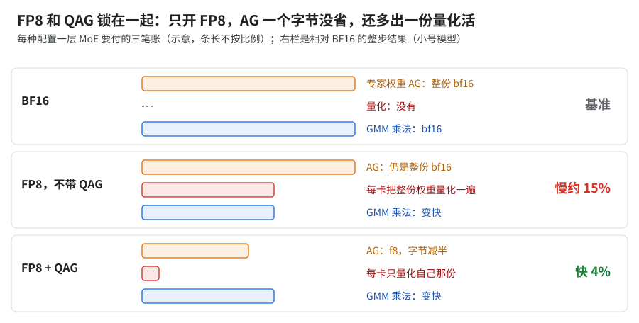
读图：百分比同 A09「收益」。
- 坑：
- scale 用 absmax 不用 fixed：validator 与运行时对
fixed判定不一致；收敛见 04。 --xla_tpu_impure_enable_large_2nd_minor_layout：生产配置是 true（单片 AOT 复现同为 true；true + libtpu 0.0.47 没验证）。哪个对 FP8 最优不确定；没有 KDA 时也没有验证过的默认值，先跟生产用 true 再自测。冲突不只来自 KDA kernel：- BF16 下同样会冲突：专家按 FSDP 切 ＋ GMM 里显式 gather（A13）＋ 长度为 1 的 scan（C05 拆段会产生），专家权重 AG 出来是大 tile 布局，进 GMM 前多一次整份权重的布局 copy，设 false 才消失。
- true ＋ gather 走 TensorCore（关 SparseCore gather）会算坏原生 FP8 MoE 的数值，修复未进生产（04 §10 注 3）。
- 自测：两个值各编一次，数 HLO 里进 GMM 前改 tile 的 copy，比 temp 和步时；改了 gather 落点就重跑数值对拍。
- 生产代码的 FP8 量化规则（上游没有）用正则写死这个模型的模块名（
decoder/...layers...、KDA / MLA 两类 MoE 层的前缀、mtp_block/...），不改会有层静默不量化。上游fp8_full用通用的decoder/.*layers.*（quantize_mtp=true时再追加mtp_block/.*），模块路径里不含layers的其他块同样漏掉。- 换模型要改三类分支，在自己的实现里把 ②③ 的模块名补进正则的「或」分支：
- ① 主干 scan 里的层，
decoder/.*layers.*一般能匹配； - ② 模块名不带
layers的前缀块或拆出来的 scan 段（这个模型的 KDA / MLA 前缀块就是；C05 拆段也会产生新名字）； - ③ 挂在 decoder 外的块，如 MTP（
mtp_block/.*transformer_layer.*；上游走quantize_mtp开关，不用改正则）。 - 路由器、logits 投影别让正则顺手吃进去——上游另有
quantize_router_proj/quantize_logits_proj开关管它们（上游键，生产代码里没有）。
- ① 主干 scan 里的层，
- 列模块名：打印参数树路径（
jax.tree_util.tree_flatten_with_path(params)），看各类 matmul 所在模块的前缀 [推断：Qwix 按模块路径匹配，参数路径和模块路径一一对应是常见情况，未逐项核]。 - 验证：
--xla_dump_to导出优化后 HLO。① 数操作数是f8e4m3fn的 dot / GMM 调用，应等于「该量化的层数 × 每层 matmul 数」，少了就是有块没匹配上；② 开了 QAG 时找专家权重的 all-gather，dtype 应是f8e4m3fn，是bf16就是退回了（A09「验证」）。闸的完整写法见 04 §11。
- 换模型要改三类分支，在自己的实现里把 ②③ 的模块名补进正则的「或」分支：
- 性能上该做，精度没闭合。放 A 档是因为提速通用；上长训前过精度闸（功能闸 f8 计数＋QAG AG 是 f8、loss 闸、长训需自定），完整写法与生产阈值（按生产自己的参考定的，不是推荐值）见 04 §11。
- scale 用 absmax 不用 fixed：validator 与运行时对
为什么：同 Transformer Engine 的
HYBRID格式：E4M3（3 位尾数、最大 448）精度够前向用，E5M2（拿一位尾数换指数、最大 57344）给动态范围更宽的梯度。per-expert scale：各专家值域不同，共用 scale 时被值域最大的专家定下，值小的专家只用到 FP8 范围的一小截。把握：公开资料 · 出处：Micikevicius et al. 2022（arXiv 2209.05433）；详讲见 04 §2.3
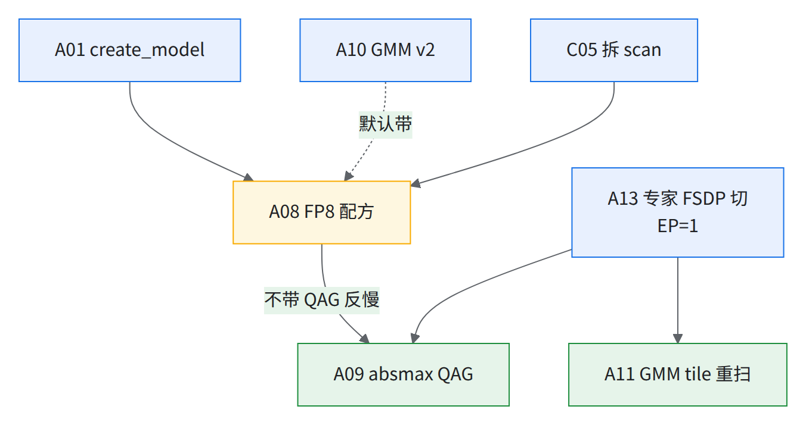
A09 · 先量化再 all-gather（absmax QAG）
- 做什么：专家权重先在本 device 上用 absmax 量化成 FP8，再 all-gather，AG 字节减半；与 per-expert scale 配套，并要让 placement 认得量化器（A02）。
- 前置 / 后续：前置 A08 全部键 + A13（
shard_exp_on_fsdp=true）+ absmax scale。 - 收益：
- 生产（小号模型）：FP8 无 QAG 比 bf16 慢约 15%；开 QAG 快约 15%（相对无 QAG）、比 bf16 快 4%。
- 复现：单级最大——阶梯里拆它慢约 35%，knockout 只关它慢约 25%，阶梯与 knockout 都排第一；2 片 JIT 消融也快约 15%。拆掉后 AG 回到 bf16，还要加本地再量化。
- 怎么开：打开 absmax QAG 开关（这个功能上游没有）。
- 代码：上游没有，需自行实现。生产实现在 MoE 层的 GMM 包装里判断走不走 QAG。
- 条件：
shard_exp_on_fsdp、use_tokamax_gmm、fp8_full＋ Qwix、GMM 权重分组量化开关、权重 FP8、gather 轴安全；缺一条就打「falling back」退回 bf16 gather。 - 走 QAG 时专家权重按 fsdp 分片进 GMM 的
shard_map，先本地量化再 all-gather。
- 条件：
- 坑：
- 与 EP > 1 不兼容：EP > 1 的 FP8 dispatch 没实现完，生产代码里没有（04）；上游对应物见 A08「只用上游」，EP > 1 判法见换场景。
- 验证：编译后 HLO 里专家权重 AllGather 的 dtype 是否
f8e4m3fn；日志「absmax QAG … falling back」不代表全部回退（lru_cache(maxsize=1)，04）。
为什么：QAG 退回时不报错，只是悄悄少省了字节。它的门是「条件全满足才走，否则打一行日志退回 bf16」；退回后照样能跑、loss 照样对，只是 AG 字节没省，所以只能在编译产物上验；退回丢的就是上面「收益」里无 QAG → QAG 那约 15%。
GPU 上相当于：FSDP2 的 float8 all-gather（权重先 cast 成 float8 再 all-gather）。
- 只用上游时：拿不到验证过的 FP8 QAG。两条路，都没人端到端测过：
- 上游自带的「量化后 all-gather」只在
fixed标定下走（A08「只用上游」），书里fixed,-224,224长跑出尖刺（04），等于拿收敛风险换字节； - 照下面骨架自写 absmax 版。 两条都不走，就按 A08「没有 QAG 时 FP8 默认不上」，留在 BF16。自写的最小骨架 [推断：按上面「先本地量化再 all-gather」写的伪代码，不是生产代码]：
python做完按上面的「验证」查 AG dtype；能拿回生产收益的几成未测。# GMM 的 shard_map 里，w_local 是本 device 按 fsdp 切到的那份专家权重 scale = absmax(w_local, per_expert_group) / FP8_E4M3_MAX w_q = (w_local / scale).astype(f8e4m3fn) w_full, s_full = all_gather(w_q, "fsdp"), all_gather(scale, "fsdp") out = gmm(x, w_full, s_full) # 反向梯度的 RS 不变 - 上游自带的「量化后 all-gather」只在
A10 · Tokamax GMM v2
- 做什么：MoE 的分组矩阵乘换成上游 GMM v2（含量化、DLHS 原生消费转置 RHS），大小两个模型默认开。
- 前置 / 后续：无前置。BF16 配方下 A01 的 CPU AOT 依赖它（见A 档依赖图）；FP8 生产配方默认带 v2，去掉 v2 FP8 仍能跑，慢约 9%。
- 收益：
- 生产：大号模型快 1–2%（非严格配对 A/B）；小号模型 CI 快约 4%（按配置差异归因，非严格 A/B）。
- 复现：knockout 换回 v1 慢 9%，慢在计算，v1 核单个慢 20–55%（只有 knockout 数；阶梯里 v1 在 CPU 上编不了，2 片 JIT 消融这一级异常未解读）。
- 怎么开：
use_tokamax_gmm=true use_gmm_v2=true（上游已有）。 - 坑：与
fp8_blockwise互斥；HLO 通信重排开后 tgmm_v2（drhs 方向的 kernel）变慢，TensorCore 计算多出约 6% 步时 [推断：多出的 TC 计算时间 ÷ 满配步时]，原因未查。
为什么：求输入梯度要乘 Wᵀ：老路径先另抄一份转置的权重再喂 kernel，v2 直接按转置的方式读原权重。
- 机理：老路径那份 Wᵀ 若落地成 HBM 转置，就是读一遍、写一遍、多占一块临时 buffer；v2 原生路径（上游配置键
moe_gmm_v2_dlhs_transpose_rhs，kernel 参数名use_dlhs_transpose_rhs，默认关）能省掉这趟往返。- 归因：生产那组数开没开这个开关无从确认（同 05 §7），所以那 1–2% 只能记在「设 v2 为默认」头上，不能归给它。
把握：推断 · 出处：上游 MaxText
kernels/megablox/ops.py（_dlhs_run_tokamax_v2；老路径swapaxes、新路径transpose_rhs的分支逻辑源码证实，省掉 HBM 往返是推断）；详讲见 05 §7
A11 · MoE GMM tile 按本模型形状重扫
- 做什么：按本模型每 device 上 GMM 的真实形状，重扫 18 个
wi_tile_*/wo_tile_*（tile_m 取扫出来的值，比 base.yml 默认小）；同时修 dlhs 槽位错配。 - 前置 / 后续：前置 A10、A13（EP / FSDP 定了形状才定）。EP、PDB、序列长一变就回来重扫。
- 收益：
- 生产：大号模型快约 8% [推断：两次步时之比]；小号模型修槽位快 4%。
- 复现：tile 改回更大的旧值后 SMEM（TensorCore 的标量存储，见 C01）溢出编不过（09 阶梯 注 13）。2 片 JIT 消融这一级异常未解读。
- 怎么开：生产用一个扫描脚本，分别扫 fwd / dlhs / drhs 三个 kernel，结果写进模型 yml 的
{wi,wo}_tile_{fwd,dlhs,drhs}_{batch_seq,embed_dim,mlp_dim}（全书按这套 fwd / dlhs / drhs 命名；每个键落到 kernel 的哪个 m / k / n 槽见 05 §7 对照表）。脚本上游没有，需自行实现；18 个键上游都有。 - 只用上游时手扫：
- 固定形状：按生产的 EP、PDB、序列长算出每 device 上 GMM 的实际输入形状，不是模型名义形状。
- 列候选：三个 tile 维各取若干 128 的倍数（要整除对应维度），wi / wo × fwd / dlhs / drhs 六个 kernel 分开扫。
- 单 kernel 计时：同一功耗档（A05 的 P7），多次取中位数；VMEM（TensorCore 的片上向量存储，Pallas kernel 在里面算）OOM 直接淘汰。
- 先查数值再排名：和默认 tile 同输入比输出，非有限值淘汰（05 §10）。
- 写回时注意 dlhs 的 K ＝ fwd 的 N（见「坑」）；在训练 profile 里复验赢家（05 §9.1）。
- 上游
use_gmm_v2_heuristic_tiling开了就用 GMM v2 自带的启发式 tile、忽略这 18 个键；没测过和手扫值谁快，可当对照组。
- 坑：tile_m 以每专家平均行数为中心，上下扫 1/8～8 倍。EP=1 时这个数是 t·k/E（t＝每 device token 数，k＝top-k，E＝专家数）；EP > 1 时每个 device 收到 EP 组内的 token、只放 E/EP 个专家，约为 t·EP·k/E [推断：按均匀路由估，路由偏斜时热点专家行数更多]。dlhs 的 K = fwd 的 N，填反静默变慢、不报错。生产扫过 216 个候选，61 个 VMEM OOM。
为什么：换 FP8 在 MXU 上最多快 2 倍，tile 选错却能慢好几倍（blockwise FP8 慢 3×，就是 tile 封顶所致，05 §7）。
- 机理：tile 决定每次搬进 VMEM 的块能不能喂饱 MXU、放不放得下双缓冲，而上游默认对所有形状用同一组 tile。
- 可迁移的规则：权重在 tile 内的复用次数正比于 tile_m，每读一字节权重能做的计算量 ∝ tile_m；它低于「峰值算力 ÷ HBM 带宽」时 kernel 就转为访存受限 [推断，roofline 估算]，换模型先按每专家 token 数定 tile_m 下限再扫。
GPU 上相当于：Triton / CUTLASS 按形状 autotune tile；VMEM 的角色类比 shared memory（类比，容量和作用域不同）。
把握：公开资料 · 出处：JAX Pallas TPU matmul 教程；tokamax GMM v2 kernel 的
calculate_tiling；详讲见 05 §7
A12 · Splash attention block / layout 按形状重扫
- 做什么：按本模型的 head_dim、序列长、PDB 重扫 Splash attention 的 block 大小和 q/k/v 布局。
- 前置 / 后续：只对 Splash 有用；head_dim / 序列长 / PDB 变了重扫。
- 收益：
- 生产：kernel 微基准 fwd+bwd 快约 50%；端到端没给数。
- 复现：端到端约 3%，几乎全在 MLA attention。
- 怎么开（按大号形状扫出的值；配套一个自适应扫描脚本，上游没有，需自行实现，手扫步骤见下）：
sa_block_q=2048 sa_block_kv=2048 sa_block_kv_compute=1024
sa_block_q_dkv=2048 sa_block_kv_dkv=2048 sa_block_kv_dkv_compute=512
sa_q_layout=SEQ_MINOR sa_k_layout=SEQ_MINOR sa_v_layout=HEAD_DIM_MINOR
sa_use_fused_bwd_kernel=true
- 坑：微基准那约 50% 不是端到端数。生产扫了 58 次，5 次 scoped-VMEM OOM。
- 只用上游时手扫：
sa_*键上游都有，默认值是 512 /HEAD_DIM_MINOR。
A13 · 专家按 FSDP 切、EP=1、在 GMM 里显式 all-gather 专家权重
- 做什么：EP 降到 1、FSDP 拉满片内，专家权重按 FSDP 切，在 GMM 的
shard_map里显式 all-gather；ring-of-experts 只在 EP > 1 时生效，默认关。 - 前置 / 后续：无前置。A09（QAG）和 A11（tile）都建立在这个切法上；B04 长上下文 CP 也要它。
- 收益（生产侧的数，都是小号模型）：
- 1024 芯（data=16 × fsdp=128）：只加 GMM 内强制权重 gather 开关，快约 10%；全 mesh AR 从两百多个 op 降到 0，它们原来约占步时的一半 [推断：AR 耗时 ÷ 原步时]。
- 64 芯：只改上游键，快 8%，HBM 多占一两 GB（叠在别的改动上、非严格单变量）。
- ring-of-experts：1–2%。
- 怎么开（两行分开抄）：
- 上游 MaxText 有的键：
ici_expert_parallelism=1 ici_fsdp_parallelism=<片内全部 device> shard_exp_on_fsdp=true allow_split_physical_axes=false use_ring_of_experts=false（命令行写小写；用环境变量覆盖要加M_前缀，大写无前缀的写法是生产启动脚本自己的变量）； - 需自行实现的开关：在模型 yml 里打开 GMM 内强制权重 gather 开关（显式 gather 这个功能上游没有，见下面「代码」）。只用上游时拿不到它，DP > 1 会留全 mesh AR，判断法见下面「只开上游键能拿多少」。
- 上游 MaxText 有的键：
- 代码（上游没有，需自行实现）：
layers/moe.py的 GMMshard_map包装里：权重按 fsdp 分片进入，在包装体内显式 all-gather；反向自然变成 psum_scatter，边界上只剩 data 轴的小 AR，避开 GSPMD 退化成全 mesh AR。 - 坑：不能改用
weight_gather_axes代替显式 gather，非量化路径下它被静默忽略（见下图）。
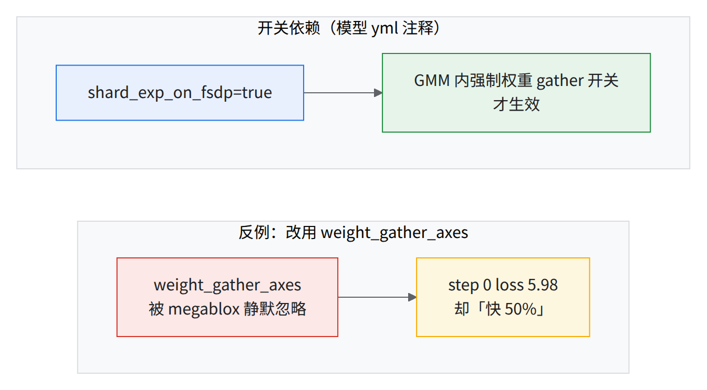
读图：快得离谱先查 loss——反例里的「快约 50%」是静默错（13 N15）。
为什么：all-to-all 的流量全挤过 torus 的对半切面；all-gather 能沿环逐跳转发、三根轴同时用满。按 Scaling Book 成本式，每字节有效带宽 AG ÷ A2A ≈ 3 × 最长轴 ÷ 4，4x4x4 上 ＝ 3，轴越长差得越多（推导见 01 §2）。
同书说一维上 A2A 只要 AG 的 ¼ 时间，并不矛盾：¼ 比的是同一个数组（AG 要复制整份到每个 device，A2A 只送出自己那份），3 倍比的是每字节效率。
所以只比每字节效率不足以论证 EP=1，决定性的是总时间 ＝ 字节 ÷ 有效带宽：EP 的 A2A 搬的是激活（∝ token 数 × top-k），FSDP 的 AG 搬的是专家权重，两边字节量各按自己的式子算，再除各自的有效带宽比 [推断]。判据同上面换场景表：同片同 batch，EP=1 / EP=2 各编一次比暴露等待。
把握：公开资料 · 出处：Scaling Book「Sharding」章（3 倍：4x4x4 微基准实测，与按公式推算的 3 吻合，见 01 §2；一维 ¼ 见同章 AllToAll 一节）；详讲见 01 §2
- 64 芯那 8% 只改了上游已有的键（EP 2 → 1、FSDP 64 → 128、
shard_exp_on_fsdp=true、allow_split_physical_axes=false），叠在别的改动上、非严格单变量；1024 芯那约 10% 是只加上游没有的 GMM 内强制权重 gather 开关。 - DP > 1（除 fsdp 外还有 data 轴）时，只开上游键会留下那批全 mesh AR，那约 10% 拿不到 [推断：由 1024 芯「之前」那份 profile 推出；当前上游是否仍会这样退化未核]。
- 判断法：只开上游键编一次，在优化后 HLO 里找 replica group 覆盖整个 mesh、形状是专家权重的 all-reduce；有就照「代码」那段自己做显式 gather。
并行形状实测代价（生产侧，小号模型）：该组扫描没含 EP=1，只说明 EP 往大走、或换成 TP 都更慢；再往 EP=1 走的那一步见上面「只开上游键」的 8%。
| 64 芯上的改法 | 步时相对扫描最优 | 读法 |
|---|---|---|
| FSDP=64 · EP=2（该组扫描里最优；在此基础上 EP 2 → 1、FSDP 64 → 128 再快 8%，非严格单变量） | — | 通信约占 20%（AR 约 5%，没藏住的 AG+RS 约 15%） |
| EP2 → EP4 | 慢约 25% | 归因为「all-to-all 跨 cube」，但 64 芯恰好 1 个 cube，这个归因未核。EP 一大、每次 A2A 的参与方和负载不均都变大 [推断] |
| EP2 → TP2 | 慢 8% | |
| TP2 → TP4 | 慢约 55% | TP 每层的 AR / RS 在关键路径上、量随激活走；TP 翻倍每 device 计算减半，通信却不跟着减，暴露比例上升 [推断] |
| 关 SparseCore offload | 慢 60% | 通信全压回 TensorCore，见 A05 |
- 原则（在小号模型 64 芯 ＝ 1 个 cube 时定的）：EP / TP 尽量小、FSDP 尽量控制在 cube 内；扩规模固定 FSDP·EP，只加 DP。
- 大号模型没守「cube 内」：生产 FSDP 铺满整片、跨多个 cube（01），但不出片、不跨 DCN——实际守的是「FSDP 不出片、片间只放 DP」。
- 为什么能跨 cube 未测（没有「FSDP 收在 cube 内 × DP」对「FSDP 铺满整片」的同片对照）。想把 FSDP 收回 cube 内就做这组：同片、同 per-device batch，比步时和峰值显存（FSDP 变小，每 device 存的权重和优化器状态变多）。
- 拓扑比切分更要紧：同规模同切分，只换 nodepool 拓扑（一根物理轴是否被几个逻辑轴共享）单步差 50% 以上。做法：物理轴尽量不切，高流量逻辑轴贴 core 轴。
- 从 64 芯扩到 2048 芯慢约 45%（另有一个「衰减」约 45% 的说法，口径未明，见 03 §7），主因是拓扑。
- 候选 4x16x32（预计线性比约 90%，未实测）；按通信路径对称性选 8x8x32（理论分析，没和 4x16x32 实测比）；拓扑按芯片写，去掉按每芯片 2 core 算的 ×2。
- GA 1 → 2 不是白翻倍：64 芯上 GA=2 的步时比 GA=1 的 2 倍多约 8% [推断：两次步时之比 ÷ 2 − 1]；另一个约 15% 的数是第二个微批的超额（10 §8.2）。
- 长序列扩规模也掉：256K 序列下芯片数翻倍只有约 70% 线性加速比；没定位原因，别当结论用。
A14 · remat：先 full，再按 HBM 余量挑几样存 device
- 做什么：大号模型 AOT 默认
remat_policy=full；有余量再挑几样存 device：mlpwi_0/1=device，再把 MoE 路由索引键设为 device（存的是路由结果 top-k 专家 id，大号模型默认就存）；FP8 配方改custom，并把 MLA Splash 残差的存放位置设为 device；模型绑定的键见 C03 / C04。 - 前置 / 后续：无前置；余量要和 A02 placement 抢（见「为什么」）。
- 收益：
- 生产：小号模型 64 芯 PDB=2 快 6%；MoE 路由索引存 device 每步省不到 1%，代价是少量常驻显存。
- 复现：knockout 下几乎不省显存也不费时间（存 residual 改回 full 只慢不到 1%）；阶梯里（placement 已关）同一刀值约 2%，2 片 JIT 消融是噪声（09 §5）。
- 怎么开：
remat_policy=custom，再把要存的 remat 键逐个设为 device（如mlpwi_0=device mlpwi_1=device；上游 custom policy 就按这些键读，生产经提交脚本里的 remat 覆盖变量传入）；模型 yml 里把 MoE 路由索引键设为 device（仅remat_policy=custom生效）。 - 代码：给路由索引单设 remat 键这件事上游没有，需自行实现：MoE 层用
checkpoint_name给路由结果top_k_indices打上名字，配置类型定义（上游configs/types.py）加同名 remat 键并放进 custom policy 的白名单。 - 坑：
- MoE 路由索引：一组对比说存 device 省不到 1%，另一组（未进生产）说 remat 也省不到 1%，方向相反、不确定，生产配置仍是 device（05）。
- 小号模型上
mlpwiremat 不加 mask 必出 NaN，加mlpwi_0/1反而慢约 9% [推断：多出的时间 ÷ 原步时]。 - 先 full 跑起来，有余量再挑几样存 device，别一次全拿去存激活：余量也可能是 placement 的调度空间（06）。只在 overlap 被显存卡住时成立，判法：编译期 temp 贴着上限、且 profile 里有暴露的 AG / RS。瓶颈是计算、DCN 或串行依赖时，多存反而可能更快（反例：05 §2 末尾 EP=1 / FSDP=128 下多存变快，必须实测）。
为什么：余量会被调度器兑换成「更早发通信」。这就是为什么阶梯里（placement 已关）存 residual 值约 2%，knockout 里只值不到 1%。
- 机理见上图（示意）。开源 XLA 调度器的目标是盖住通信的估计延迟，不是越早发越好；显存用量过上限一半后，显存才进入它的打分，把在途窗口往短里推。
- 单片卡的不是准入线：knockout 基线是单片，编译期 temp 约 87 GiB，在 placement 准入线 96 − 4 = 92 GiB（A02）以下，卡住提前量的是余量本身；92 这道线只对多片成立。
- 例外：要是单片真被准入线卡住，那就得是 placement 自己的显存估算比 temp 高 [推断]。
GPU 上相当于：FSDP（v1）的
limit_all_gathers=True——CPU 线程限流，只许预取下一层的 all-gather，显存里最多同时住两层，拿提前量换显存（类比）。把握：源码证实 · 出处：开源 XLA
latency_hiding_scheduler.cc（整张排完仍超限、且配了重排次数rerun时按 0.9 倍上限重排；开源默认rerun＝0，TPU 后端开不开、开几次未核）；详讲见 06 §1
A15 · checkpoint 保存不阻塞主线程
- 做什么：Grain / Json handler 改
AsyncCheckpointHandler，主线程设备 barrier 改 KV-store barrier；周期保存异步，只有最终步 / 抢占才同步。 - 前置 / 后续：无前置；A15b 和它一起搬。
- 收益（生产侧的数；各行模型不同，不能互相比较）：
- 大号模型 128 芯片：主线程净阻塞 step0 少约 35%、热态少约 40%。
- 小号模型千芯片级生产：存档那步原来要一分半到两分半；小号模型 128 芯片验证：存档停顿从百秒级降到约 12 s。
- 小号模型周期保存（按样本数存档）：主线程阻塞从约 200 s 降到 0，存档那步不再卡。与上一行同一修法、口径不同，见 07 §3。
- 非存档步的步时不变。
- 怎么开：上游没有，需自行实现，三处改动：
- 数据迭代器状态和 json 的 checkpoint handler 改继承
ocp.AsyncCheckpointHandler，也走异步写。 - 检查点清理前的 barrier 挪走：Orbax 每次异步 save 末尾在主线程跑一次全局 barrier（删旧步用），补丁跳过它，改在 Orbax 后台 finalize 线程里用 KV-store barrier 同步。
- 保存入口把「强制保存」（最终步 / 抢占，要
wait_until_finished）与「按样本数的周期保存」（和按步数一样异步）拆开。
- 数据迭代器状态和 json 的 checkpoint handler 改继承
- 坑：monkey-patch orbax 内部，换 orbax 版本要重验。warm 残余 11–13 s 是 d2h 带宽决定的下限。
为什么：异步存档前的跨主机「点名」仍在训练线程，且默认借 TPU 发一次 all-gather，要排在已派发的训练步后面；换成 KV 存储 barrier 就不占设备队列。机理见 07 §3。GPU 上相当于把 NCCL 后端的
dist.barrier()（在 stream 上发 all-reduce）换成 TCPStore barrier。
A15b · MTC 本地层 + device-id 恢复（与 A15 一起搬）
- 做什么：多层检查点（MTC）的本地 ramdisk 层，加上 device-id 恢复补丁（重编号、换 cube 别列副本）；生产配置里与 exit 0 修复同在，上游 MaxText／Orbax 都没有 device-id 恢复。
- 前置 / 后续：和 A15 一起搬；多片长跑前做，B08 的挂住阈值要跟它配。
- 收益（生产，10+ 片故障演练）：10+ 片 11 次注入故障全部恢复，每次 11–14 分钟；存一次本地层派发中位约 5 s；恢复开始到 trainer_state 读完三四分钟（07 §5 / §6.2）。
- 怎么开：都是上游 MaxText 已有的键，直接写（生产经提交脚本里的 MTC 备份间隔变量等环境变量转成它们，值相同）：
- 本地层每 100 步存一次：
local_checkpoint_period=100 - 备份每 200 步一次：
multi_tier_checkpointing_backup_interval_steps=200（和..._minutes二选一） - 数据并行份数填片数：
mtc_data_parallelism=<片数>（0 ＝ 按片数） - 总开关
enable_multi_tier_checkpointing=true，另要local_checkpoint_directory；ramdisk 按日志里每 host 需要量留足余量。
- 本地层每 100 步存一次：
- device-id 恢复要自己补（上游没有，需自行实现）：
- 恢复配对：读本地层那一步存下的「distributed id → device ids」表，所有 host allgather 一次后做同一个决定。
- 重编号后按 device id（＝ replicator 摆文件用的 runtime index）配对；换了 cube 的列由同列的其他副本补上；配不上照旧退回 GCS。
- 配对结果作为「distributed id → device ids」映射交给 Orbax 的 emergency replicator 管理器。
- 坑：
- 没有 device-id 恢复，换了 host / cube 本地层就被拒收，退回 GCS（故障演练，07 §6.2）。搬过去用故障演练验收（判据同 07 §5）：换掉一台 host 或一个 cube 后重启。主判据：日志显示命中本地层；另核数据状态：首批样本序号与中断前接上。
- 辅助判据：读检查点明显短于走 GCS（tiny 调试配置 192 芯片：本地层约 3 s、GCS 28–33 s，本地层只成功过 1 次，见 07 §6.1；大号 10+ / 20+ 片生产作业读本地检查点＋搬到 mesh 约 19 s）。
- 生产把持久层关了（
ENABLE_CHECKPOINTING=false），整池丢的 RPO 没演练过（07 §13 第 6 条）。
- 没有 device-id 恢复，换了 host / cube 本地层就被拒收，退回 GCS（故障演练，07 §6.2）。搬过去用故障演练验收（判据同 07 §5）：换掉一台 host 或一个 cube 后重启。主判据：日志显示命中本地层；另核数据状态：首批样本序号与中断前接上。
为什么：本地层的 ramdisk 活得比 pod 久，重启后每台读自己内存里那份，换了机器才去 peer 节点或 GCS 拉。机理见 07 §5。
A16 · JAX 编译缓存放 GCS
- 做什么：
jax_cache_dir=${BASE_OUTPUT_DIR}/jax_cache，编译结果存 GCS 复用。 - 前置 / 后续：无前置。走 A01 后缓存只对 JIT 调试和失败重启有用。
- 收益（生产）：冷编译约 5 分钟，命中缓存约 1 分钟，快约 80%。
- 怎么开：MaxText
jax_cache_dir=<GCS 路径>（上游已有；用环境变量覆盖按上游规则写M_JAX_CACHE_DIR，见文末配置覆盖顺序）。 - 坑：探针编译会污染共享缓存，缓存目录别和实验共用。写 GCS 要桶级
storage.objects.list权限，否则 403（操作坑附表第 4 行）。
A17 · 数据加载的启动与主机内存开销
- 做什么：token 计数 O(1)、去掉启动抽样校验；索引改 POSIX SharedMemory，train/eval 共享 source；不在模块级 import TensorFlow；TensorBoard 事件文件轮转、去掉每步同步 flush。
- 前置 / 后续：无。
- 收益（生产）：每数据集省约 45 s（计数）+ 约 23 s（抽样校验）；9 进程主机内存约 1.8 TB → 约 270 GB；每次
import maxtext省约 4 s；TensorBoard 那项没给数。 - 怎么开：生产的 lazy dataloader（
MMAP_IDX_FULL_VALIDATION=1恢复全扫）；TensorBoard 事件文件按步数轮转、按秒数定时 flush 两个配置（需自行实现，见下一行）。 - 代码：
.bin/.idx的 mmap 读取上游已有（MMAP_IDX_FULL_VALIDATION也在上游）；SharedMemory 索引和 TensorBoard 轮转上游都没有，需自行实现。 - 坑：绑定生产的数据格式（
.bin/.idx、GCS Fuse），借思路不借代码。
B 档：按场景（多片 DCN / 长上下文 CP / 规模 / 优化器）
B01 · XLA collective pipeliner 按 dtype / 片数决定开关（多片）
- 做什么：按 dtype 和片数决定开不开上游 XLA 的 collective pipeliner。现行规则（生产）：只有 BF16 和跨 DCN 的 FP8 关，单片 FP8 开；多片关它是为了让跨 DCN 的 DP × FSDP512 过 AOT、省 HBM。各格依据见场景开关表。
- 前置 / 后续：多片时要和 A03（本片数的 cost profile）、B02 一起看；只关 pipeliner 时要配 B02 的 flag（见「坑」）。
- 收益：
- 判据：标题里的「按 dtype / 片数」是生产规则的写法；换集群时按 HBM 余量＋cost profile 含不含 DCN 来判 [推断]，目标片数上仍要各测一次，见 04 §6。
- 怎么开（平台 flag）：
XLA_FLAGS=--xla_disable_hlo_passes=all_gather_decomposer,collective-pipeliner-forward（关）。 - 坑：
- 上游 XLA 的 pass，不是自写的 placement pass（02 §16.1）。
- 别只关
all_gather_decomposer、让 pipeliner 开着：JIT 对照里 2 片大号模型这么配，编译期 HBM 超上限（1 个样本）。 - 只关 pipeliner、decomposer 开着（
--xla_disable_hlo_passes=collective-pipeliner-forward）：没有实测（都是两个一起关或只关 decomposer）。连带两件事：- decomposer 会把一部分 AG 改写成「零广播 → DUS → AR(add)」，跨 DCN 通信量翻倍（03 §3），多片这么配要同时开 B02 的
prefer_async_allgather_to_allreduce。 - DP2 AOT OOM 归因里「decomposer 放大输入」那一半仍在，跨 DCN 先比编译期 temp [推断：由 03 §3 那行的归因推出，没单独验证]。
- 单片没 DCN，第一件不发作；第二件未测，测法同场景开关表单片 BF16 补测，实验组换这一配。
- decomposer 会把一部分 AG 改写成「零广播 → DUS → AR(add)」，跨 DCN 通信量翻倍（03 §3），多片这么配要同时开 B02 的
为什么：pipeliner 把循环里本圈末尾的通信（本模型是梯度 RS）挪到下一圈开头发，输入多活一圈，多扛一份 buffer 换重叠。单片余量够就赚，多片关掉反而快，原因有两条：
- 显存：placement 准入线是 96 − 4 = 92 GiB（容量减安全余量），不是运行时上限 94.74 GiB。多片（2 / 8 / 16 片）pipeliner 开着时编译期 temp 约 93 GiB，已超出 1 GiB 多（关掉后明显更低；单片开 / 关都在准入线以下），placement 的提前移动多半被拒 [推断]。
- 依据：它挪通信靠的单片 profile 里没有 DCN 耗时 [推断，同 02 §16.2]。
- 判据：placement 在调度后用自己的显存估算、不看最终 temp，书里 temp 与实机峰值差 −8～+4 GiB，所以 temp 只当线索，要看 placement 的接受 / 拒绝计数。
GPU 上相当于：FSDP 反向里第 i 层的梯度 reduce-scatter 不当场等完，放到通信流上和下一层的反向计算重叠（类比）。
把握：源码证实 · 出处：开源 XLA
collective_pipeliner.cc（--xla_disable_hlo_passes关的collective-pipeliner-forward是kForward：「pushed to the next iteration」）；详讲见 02 §16.3
B02 · DCN：用异步 all-gather 代替 all-reduce（host reduction 保持开）
- 做什么：跨 DCN 时让 AG 保持 AG、不被改写成 AR；生产共享 flag 文件默认开（影响全部作业）；配套多片网络设置。
- 前置 / 后续：多片网络（
hostNetwork+ 网卡 flag）是前置；B01 只关 pipeliner 时必须配它。 - 收益：
- 生产：小号模型 DP2 快约 20%（最慢 worker 第 5–9 步均值）。
- 复现：2 片 JIT 消融快不到 1%，在噪声内；单片无 DCN，单片 knockout 不列。
- 怎么开（平台 flag）：
--xla_tpu_prefer_async_allgather_to_allreduce=true；多片 JobSet 要hostNetwork+--megascale_grpc_interface_prefixes=<网卡>。 - 网卡填什么：多片用
eth2,lo，只走独享数据卡；第二块网卡对 AR 没用（AR 卡在 host 侧归约，单双网卡都约 170 Gbps，03 §12）。生产全跑eth2,lo；小号模型 CI 默认eth1,lo；eth1,eth2,lo是 10+ 片 JIT 基线的配置。网卡 flag 必须注入：不注入时量出的双片扩展效率（约 75%）不作数。 - 坑：host reduction 保持默认开，微基准结论不能搬到训练（见下图和图后三条）。
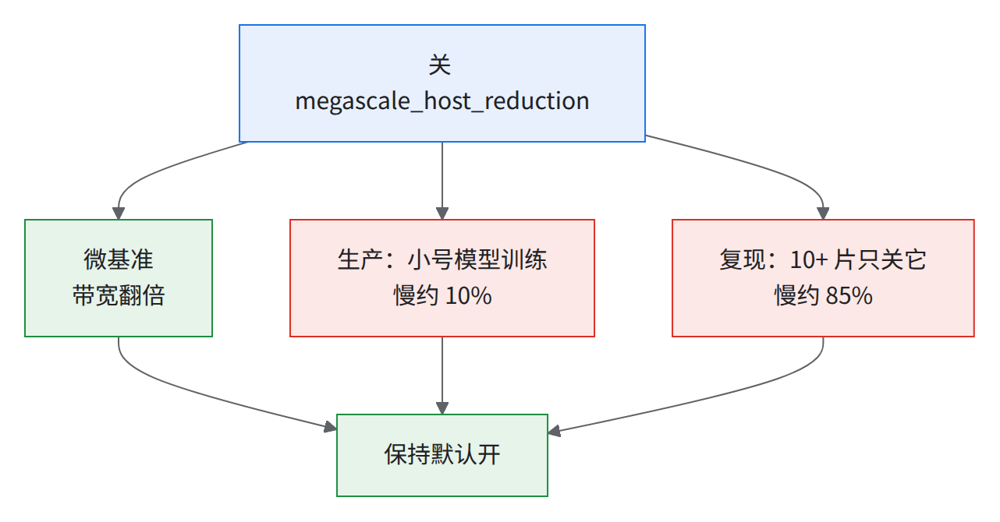
读图：微基准赢家不是训练赢家（03）。中间是生产、右边是复现 [推断：约 85% 由两次步时之比得出]，别合成一个数。
- 单片是否中性未单独测，见场景开关表。
- 「DCN 利用率 99%」指复现吻合度和弱扩展效率，不是链路利用率；AR 只到双网卡线速约 35–45%（03 §16.2）。
- host reduction 为什么微基准关了快、训练关了慢——机制：未公开（libtpu 没有这个 flag 的文档）。判据：只认真实训练步时上的 A/B，不认微基准。GPU 读者可以类比没有 GPUDirect RDMA、跨节点数据要经 host 内存中转的 NCCL（类比，不是同一机制）。
为什么：all-reduce ＝ reduce-scatter ＋ all-gather，跨 DCN 要搬两倍字节。decomposer 把 AG 改写成 AR(add)，字节就翻倍；这个 flag 让 AG 保持 AG。
把握：公开资料 · 出处：Scaling Book「Sharding」章；详讲见 03 §3
- DCN AR combiner：1 GiB 试过、未进生产，不收；但 JIT 对照里 2 片大号模型只加它快约 10% [推断]，HBM 多几 GiB（各 1 个样本），跨 DCN 看 HBM 余量再 A/B。
- 生产配置里多片一律设
--xla_tpu_dcn_all_reduce_combiner_threshold_bytes=0，交给私有的 DCN all-reduce 合并 pass（上限 1 GiB）；10+ 片上两种谁快没有 A/B（03 §5）。 - 只用上游时别照抄
=0：上游没有 DCN all-reduce 合并代码，=0等于关掉合并又没人接手，梯度 AR 一个个发 [推断：由生产设 0 的前提推出]。不合并多贵见 03 §2 合成基准（28 个 AR 并发对比合并后，合并快约 65%）。- 可选：不设、用 libtpu 默认阈值（默认值未核）；或
=1073741824与不设做 A/B，同时比编译期 HBM。只走LIBTPU_INIT_ARGS，两端写同一个值（A01）。 - 生效检查：数优化后 HLO 里跨 DCN 的梯度 all-reduce 个数；合成基准里 28 包变 2 包（按 dtype 各一包），真实模型自己数 [推断：真实梯度包数没人数过]。
- 可选：不设、用 libtpu 默认阈值（默认值未核）；或
- 生产配置里多片一律设
- 跨 zone 前先用 α-β 估一下：看 K（每步跨 DCN 的集合通信次数），合得越少越怕延迟。公式、估算数和坑见 10 §8.1；全是理论估算（±50%，α / B / K 都没实测），换模型要重算。
B03 · FP8 amax 只在 replica 内求 MAX（多片 + FP8）
- 做什么：FP8 求 amax 时只在本 replica 内做 MAX，不跨 DCN 归约。
- 前置 / 后续：前置 A08。
- 收益：
- 生产：DCN 上 ALL_REDUCE/MAX 静态指令降到 0（DP=2 的 AOT）；编译临时内存略降；步时没给数；DP2 1000 步 loss PASS。
- 复现：没单独拆；生产配方已含它，2 / 8 片数字都包含它。
- 怎么开：没有开关，是代码改动（上游没有，需自行实现）——
DenseGeneral外包一层只把data设为 manual 的 partialshard_map，用lax.pcast(..., to="varying")标记；quantization=fp8_full时量化规则换成「amax 只在 replica 内求」的版本，线性层据此走 replica 内的 dot_general。 - 坑：HLO 计数基于旧版代码，当前代码未复核。
B04 · 长上下文 CP 的配套（专家 FSDP 切分 + CP 计数修复）
- 做什么：CP 下
expert_countspsum 归约轴加序列维；修 packed CP 尾部串段污染；CP > 1 统一 EP=1 + 专家 FSDP。256K SMEM 见 C01，zigzag 见 C06。 - 前置 / 后续：前置 A13（专家 FSDP 键）；Muon 时配 B06；有线性注意力层看 C01 / C06。
- 收益（生产）：修复后小号模型 CP8 heap 115 → 44 GiB，步时快约 45%（06）；修前修后 JAX 版本不同（修前是 0.10），是含缓解的合计，不是单项。
- 怎么开：
ici_context_parallelism=<N> context_parallel_strategy={all_gather|a2a}+ A13 的专家 FSDP 键。 - 代码：CP 计数修复上游没有，需自行实现：
layers/moe.py里expert_counts的 psum 把 CP 的序列轴也算进归约轴，各 CP rank 才看到同一份全局计数。 - 坑：
- 修复前各 CP rank 的 fp32 routed bias 悄悄分叉，loss 看不出。开 CP 前先确认这条修复在。
- JAX 0.11 下 Muon NS 的 SPMD 在 CP 时编译 OOM，缓解：关掉 NS 矩阵复制开关、打开 Muon 批量 NS 开关；有界 fallback 未进生产。
- CP=16 编译 VMEM OOM（约 78 MiB，超 64 MiB 上限，附带观察），未处理。
- 线性注意力（GLA）+ CP 静默算错：GLA 层调 Pallas 时把
initial_state写死成None，各 rank 状态从零开始，无报错、无 config 校验（机理与查法见 13 §5.1）。MLA + CP 数学等价，不受影响。有 GLA / KDA 类层要开 CP，先确认 state 跨 rank 传递。 - KDA 的 CP 现状（判据，08 §11、C06、13 §5.1 同此）：
- 结论：现行 8K 的 CP>1 统一用
all_gather，256K 配置保留a2a（256K 改 AG 未进生产）；大号模型生产ICI_CONTEXT_PARALLELISM=1，配置里写的a2a不起作用。 - Ulysses
a2aCP：显式 all_to_all＋短卷积 halo，每个 rank 拿全序列、按头切，不用跨 rank 传状态 [推断：机理]。 all_gatherCP：kernel 库的 CPContext 在前向和反向跨 rank 传状态，缺了会断言失败。- MLA 的 CP 策略覆盖配置是过渡开关，允许 KDA 用 AG、MLA 用 a2a 或 ring（08 §11 是 ring 设计稿的示例配置）。GLA 路径修没修未核。
- 结论：现行 8K 的 CP>1 统一用
B05 · GA > 1 时阻止专家权重 all-gather 被提到循环外
- 做什么：GA 循环里给参数加一个「看起来随迭代变化」的依赖，阻止编译器把专家权重 all-gather 外提到循环外。
- 前置 / 后续：只在 GA > 1 时有意义，大号模型生产 GA=1。
- 收益（生产）：被外提的 concat 缩到约 1/17，16 芯 loss 校验的 OOM 解决。省的是显存不是步时。
- 怎么开：打开防权重 AG 上提开关（默认关），也可用对应的环境变量开。
- 代码：上游没有，需自行实现。做法是在梯度累加循环里注入一个「随迭代变化」的依赖：每个 GA 迭代把每个参数的一个元素换成由本批数据派生的值、过
optimization_barrier、再换回原值。运行时等于没改，但编译器把参数当成循环变量，不再把 all-gather 外提到循环外。 - 坑：姊妹开关「防梯度 RS 上提」（对应 dW 的 reduce-scatter 外提，默认关，本书未验证）不收；现象见 13 O17。
B06 · Muon 批量 Newton-Schulz + Muon NS 展开开关（优化器是 Muon 时）
- 做什么：按叶子的物理 PartitionSpec 在
shard_map内做 Newton-Schulz，只 gather 参与矩阵运算的轴；再把 NS 迭代展开。 - 前置 / 后续：优化器是 Muon 才有；CP 下它也是避开编译 OOM 的缓解（B04）。
- 收益：
- 生产：小号模型 CI 快 1–2%；大号模型没有可引用的数。小号模型 64 芯 NS 展开单项约占同批七个 flag 合计收益的一半（见「试过不行」表）。
- 复现：阶梯里拆它慢 1–2%、knockout 只关它慢 3%，外加省显存和编译时间；但 knockout 只关它时 temp 反而省一截，与阶梯方向相反（原因未查，别当定论，06 §10.2）。
- 怎么开：打开 Muon 批量 NS 开关、同形叶子每批 16 个，再打开 Muon NS 展开开关（模型 yml 与单片 AOT 复现的公共配置）；代码上游没有，需自行实现（做法见「做什么」）。
- 坑：已知风险：rank-3 非 batch 路径去掉了复制预算保护；2-D 权重覆盖 dim_nums 会丢
wkv_a按块正交化的分块配置（MLA）；两设备 CPU mesh 能复现 XLA verifier failure。新权重形状要重过。
B07 · HBM 放得下时加大 per-device batch（规模 / 批大小）
- 做什么：大号模型 BF16 把 PDB 从 2 加到 3，配一个 AOT 性能验证 workflow。
- 前置 / 后续：HBM 要和 A02 placement、A14 remat 抢。
- 收益（生产）：大号模型 BF16 PDB 2 → 3，tokens/s/device 多约 30%；步时其实变长约 15%，批大小不同。
- 怎么开：
PER_DEVICE_BATCH_SIZE=3（GBS 跟着变）。 - 坑：
- GBS 变了：loss 对比只是 INFORMATIONAL，超参要和算法方确认。
- 放得下的判断是编译器口径，不是实测峰值。
- 这组关 HLO 通信重排、full remat；开 A02 后 HBM 要让给 placement，PDB=3 放不放得下不确定；生产仍 PDB=2。
B08 · 把 MegaScale 挂住阈值放宽到 20 min（多片 + MTC）[推断]
- 做什么：把 libtpu 跨片运行时判「挂住」的阈值从默认 5 min 放宽到 20 min。生产作业配置里有，没有配套说明，误杀日志未核，整条是推断。
- 前置 / 后续：配 A15b（MTC）一起用。
- 收益：不提速。生产在数千芯片的多片 MTC 作业上一直设着；单独的收益没有数据。
- 怎么开（平台 flag）：
LIBTPU_INIT_ARGS加--megascale_graph_hang_threshold=20m。 - 坑：
- [推断] 避免恢复期间（MTC 恢复三四分钟 + 加载 / 编译）被当成挂住误杀。默认 5 min（07 §7 超时表）；稳态不该放宽，代价是真挂住时晚 20 min 才发现。
- 多模态版的经验：几个 MegaScale 阈值取 min 才是有效值，单设它为 20m 可能不生效（同批还把
--megascale_send_rpc_timeout从默认 45 s 改到 5m）；改完要在恢复演练里确认没被另一个阈值先触发。
- 自己定阈值：决定它的是分钟级的非稳态窗口，不按秒级步时换算。
- 要大于「最快 host 已到跨片同步点、最慢的还没到」的最长合法时间。候选窗口：恢复读档（MTC 三四分钟）、首步编译或加载产物、数据管线初始化、阻塞保存 checkpoint。
- 量法：正常恢复里从每个 host 日志取「恢复完成」「第一步完成」时间戳，算最快与最慢 host 的差，取几次演练的最大值再加余量。
- 余量多少：需自定。hang 检测算不算编译时间：未核。
为什么：阈值量的是某个 worker 在一次 MegaScale（libtpu 的跨片运行时，不是同名论文）通信上等了多久，所以要大于主机间合法的最长到达差，和步时无关；恢复和存档改用 KV barrier 就不用放宽。机理见 07 §7。GPU 上相当于 NCCL 的超时（
init_process_group(timeout=)）。
C 档：与模型结构绑定（KDA / MLA / 特定层配置）
新模型没有对应结构时整条跳过。
C01 · KDA Pallas kernel 链（B·T 展平、跳过冗余重算、mega-kernel、SMEM 表）
- 做什么：KDA kernel 库升版（需要的 kernel 特性见下表：一版带 fused 反向 mega-kernel、packed / varlen 前向 mega-kernel 和 CostEstimate，下一版让 SMEM 只预取 O(序列数) 的边界表）；调用侧去
vmap，由 kernel 库原生处理 batch；disable_recompute=True，反向跳过已有 residual 的重算。 - 前置 / 后续：A04（CostEstimate）随 mega-kernel 那一版进来；C02 / C03 依赖同一 kernel 库；B04 长上下文要 SMEM 只预取边界表的那一版。
- 收益（生产）：
- 升到带
optimize_remat（kernel 内打kda_residuals标签）的那一版快约 15%（和其他改动一起，单项未拆）；去vmap快 4%（测的是 B·T 展平写法，现行改由 kernel 库原生处理 batch，这 4% 不直接适用）；跳过重算快 2–3%。 - 升到带 fused 反向 mega-kernel 和 CostEstimate 的版本：大号模型快 7%（两种口径都是 7%），小号模型 CI 快 6%。
- 另一次小版本升 pin 与 CP 修复混在一起快 1–2%，不算单项。
- 升到带
- 怎么开：钉生产用的 KDA kernel 库版本；KDA kernel 封装和 KDA 注意力层要自己写（上游没有）。
- 新模型要改什么：别的线性注意力（生产里线性注意力块的判定类覆盖 GLA、KDA、GDN 三类）找等价 Pallas chunk kernel；可借 B·T 展平 + 跨 batch 唯一 segment ID、反向复用 residual、CostEstimate（A04）。
- 坑：
- B·T 展平写法不支持
initial_state/output_final_state；用 kernel 库原生 batch 支持就没有这个限制，CP 下状态由 CPContext 传（B04）。 - SMEM 改成只预取边界表之前，256K CP8 的 scoped SMEM 约 2 MiB，超 1 MiB 上限一倍，编译失败。
- 多模态版在更早的版本上编不过，原因是临时显存超上限；要钉到多模态版编得过的新版。
- B·T 展平写法不支持
为什么：Pallas kernel 被
vmap时，若被 batch 的是 scalar prefetch 参数（或动态 grid 界），就退成 B 次串行启动，所以展平成一次调用更快。
- 例外：共享的 prefetch 表（不带 batch 维）照常在 grid 前加一维、仍是一次启动，只有那张表本身随 batch 变时才落进显式循环（同 05 §3 第五个坑）。
- 名词：scalar prefetch 是开跑前把索引、边界表这类小量先放进 SMEM（TensorCore 的标量存储）；SMEM 编译期静态分配、不会溢出到 HBM，超了就编不过。
把握：源码证实 · 出处：JAX
pallas/pallas_call.py（_batch_with_explicit_loop）、Pallas TPU details 文档（「超了就编不过」是推断：文档只写 SMEM 用途和 VMEM 超限报 OOM，本书实测 SMEM 超限也是编不过）；详讲见 05 §1
需要的 kernel 特性（从上到下，各项依次出现在越来越新的版本里；钉版本时取同时具备所需各项的那一版）：
| 优化 | 所需的 KDA kernel 能力 |
|---|---|
C03 kda_residuals |
optimize_remat：kernel 内给 Aqk / Akk / g_cumsum 打 checkpoint_name |
| C01 mega-kernel、A04 | fused 反向 mega-kernel、packed / varlen 前向 mega-kernel，kernel 报 CostEstimate |
| B04 256K CP8 | SMEM 只预取 O(序列数) 的边界表，scoped SMEM 压到 1 MiB 以内 |
| C02 短卷积融合 | 含短卷积融合 kernel |
| 多模态版 | 临时显存压到上限以内，多模态版编得过 |
C02 · KDA 短卷积融合 kernel + CPU AOT 选对 kernel
- 做什么：Pallas 短卷积融合 kernel：把 Q/K/V 短卷积、SiLU、Q/K L2norm 融成一个 kernel（要钉到含它的 kernel 库版本）；AOT 编译脚本默认把 kernel 库的目标平台环境变量设为
tpu。 - 前置 / 后续：同 C01 的 kernel 库；选平台那条是 A01 的一部分。
- 收益（生产）：小号模型 64 芯整体快 4%，小号模型 CI 快 4%；大号模型 BF16 快 1–2%；大号模型 FP8 快 4%（同时换了 profile，见 A04）。选对平台快 2–3%（单次对照）。
- 怎么开：在 KDA 注意力层接入短卷积融合 kernel 并打开它的开关（需自行实现）；AOT 时 kernel 库的目标平台环境变量设为
tpu。 - 新模型要改什么：没 KDA 不适用；但 CPU AOT 选错 kernel 的教训通用（A01）：CPU AOT 下每个 kernel 确认选的是 TPU 版。
- 坑：TP > 1 且 head 被切时回退 JAX。
C03 · kda_residuals：让 remat 看见 custom_vjp kernel 的中间量
- 做什么：KDA
checkpoint_name改名 + 新增一个 KDA 残差 remat 键（生产经 remat 覆盖变量传入）；kernel 库要升到带optimize_remat=True的版本，kernel 内给Aqk / Akk / g_cumsum打 checkpoint_name。 - 前置 / 后续：前置 C01（升到带
optimize_remat的版本）；是 A14 的模型侧延伸。 - 收益（生产，小号模型 64 芯）：full → custom
context + kda_residuals快约 10%；单开kda_residuals=device快约 7% [推断：省下的时间 ÷ 开启后步时]。 - 怎么开：
remat_policy=custom，context设为 device，再把 KDA 残差键设为 device。给 KDA 残差单设 remat 键这件事上游没有，要自己把键加进配置类型定义（上游configs/types.py），键名取 kernel 里的残差名kda_residuals最省事。 - 新模型要改什么：remat 看不见 kernel 内部（05），任何 custom_vjp kernel 都走下图三步。
- 坑：
- 两个静默失效：旧 checkpoint 名不匹配白名单；
chunk_kda的 custom_vjp 让context标记无效。kernel 库早于带optimize_remat的那一版时，这个键是 no-op。 - 大号模型生产没开（单片 AOT 复现 / CI 只把 MLA Splash 残差设为存 device）[推断：HBM 余量不够]；小号模型上现在开不开不确定。
- 两个静默失效：旧 checkpoint 名不匹配白名单；
为什么：kernel 对 remat 是黑盒：中间量没名字，只能全存或整段重跑。custom_vjp 显式声明反向要哪几个张量，remat 才能挑着存。
GPU 上相当于：
torch.utils.checkpoint看不进自定义autograd.Function/ Triton kernel 内部，只能整段存或整段重算（类比）。把握：源码证实 · 出处：JAX
_src/custom_derivatives.py（optimize_remat注释「most useful when the fwd rule is an opaque call such as a Pallas kernel」）；详讲见 05 §2
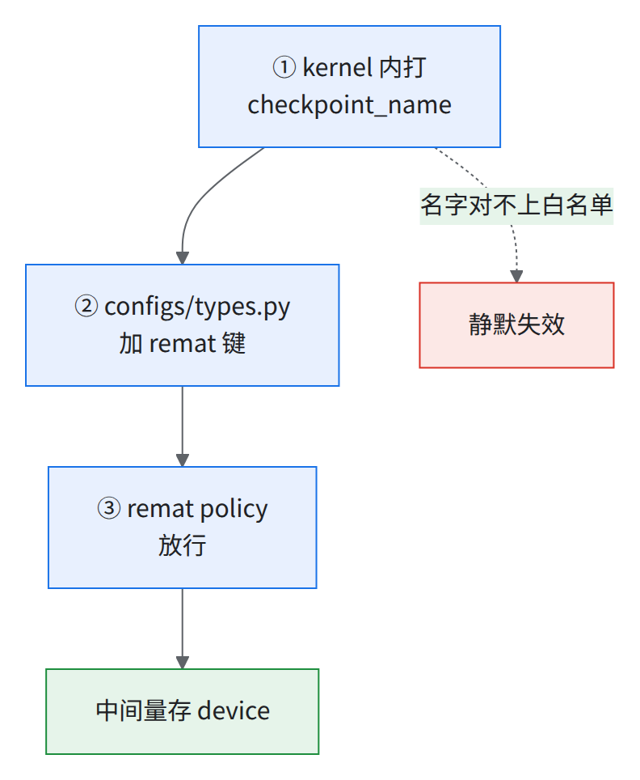
C04 · MLA Splash 残差放置开关设为 device
- 做什么：独立于
context控制 MLA Splash 的 output 与 logsumexp residual 存不存 device；FP8 配方对齐。 - 前置 / 后续：A14 的模型侧延伸；用 Splash 才考虑。
- 收益：
- 生产：大号模型 FP8 快不到 1%，消除 Splash forward replay。
- 复现：2 片 JIT 消融慢不到 1%（噪声）、多占一些显存；阶梯里和 A14 一起拆。
- 怎么开：
remat_policy=custom，把 MLA Splash 残差的存放位置设为 device（大号模型 FP8 生产；生产经 remat 覆盖变量传入）；代码改两处：Splash 调用处（上游layers/attention_op.py）打 checkpoint_name，配置类型定义（上游configs/types.py）加键。 - 新模型要改什么：键名绑定 MLA。MHA / GQA 走 Splash 要在
attention_op.py给 output / logsumexp 打 checkpoint_name 并加键；现有context键能否覆盖不确定。 - 坑：这组数是单次对比、profiling 窗口不同，标注为「非普适加速保证」；offload 没做性能验证。
C05 · FP8 的模型侧改造：首尾层 BF16 拆 scan + 防单次 while 被内联
- 做什么：scan 拆成前段 BF16 / 中段 FP8 / 尾段 BF16 三段静态 scan（checkpoint 保存前 collapse、恢复后 expand）；
set_xla_metadata(skip-simplify-while-loops_trip-count-one=true)；尾段 BF16 取 2 层，对齐 Megatron。 - 前置 / 后续：A08 依赖它。
- 收益：没有数（精度与结构性前提）。这条不提速，是 FP8 能跑对的前提。
- 怎么开：A08 的首尾层 BF16 三键（自行实现）；代码在模型专用的 scan 布局和 decoder 里给长度为 1 的 scan 打 skip-simplify 标记（上游没有，需自行实现）。
- 新模型要改什么：拆段写死了这个模型的层结构（前缀层 + MLA / KDA 周期）。要 ① 按自己的层排布重写拆段与 collapse / expand；② 所有
nn.scan(length=1)包 skip-simplify metadata，否则 XLA 内联单次 while，破坏调度和显存管理（会牵连 AllGather buffer）。 - 同构层模型（如每层都是 GQA ＋ MoE）怎么配：
- 全 BF16 或全层 FP8 不用拆：上游默认
scan_layers: true、inhomogeneous_layer_cycle_interval: 1，一个 scan、长度＝层数 ÷ 周期，除不尽报错（layers/nnx_decoders.py）；前几层 dense（first_num_dense_layers）时上游 DeepSeek 类写法是 dense、MoE 各一个 scan。 - FP8 ＋ 首尾层 BF16 要拆成两到三个 scan，同构层的拆法未测；尾层 BF16 本身要不要也没做消融（04 §3）。参照上游
layers/nnx_decoders.py的 DeepSeek Engram 路径（按特殊层把 scan 切成几段、每段独立名字），再给 BF16 段的模块路径加一条不量化的 Qwix 规则 [推断：拿它做首尾层拆段没人测过]。 - 不拆的代价（都未测）：全层 FP8 省掉拆段和长度为 1 的 scan 的坑，但精度风险没有数（尾层 BF16 照抄 GPU，TPU 上没消融）；全层 BF16 没精度风险，但放弃 FP8 提速（带 QAG 时才有，A09）。
- 要不要拆：按 04 §3 的扫法，同 checkpoint、同数据顺序只扫尾层 BF16 层数（0 ／ 1 ／ 2），每档过 A08 的 loss 闸；0 层过得了就不拆。阈值和跑多长需自定。
- 配对了没有：编译后 HLO 里 decoder 的 while 个数应等于段数、每个 trip count 等于该段层数；少一个多半是长度为 1 的段被内联，补 skip-simplify。checkpoint 参数形状和不拆时一致，collapse / expand 才算写对 [推断：由「保存前 collapse」推出]。
- 全 BF16 或全层 FP8 不用拆：上游默认
C06 · 线性注意力层的 CP Q/O zigzag 负载均衡
- 做什么：all_gather CP 下，线性注意力层在层内自己做 Q/O zigzag 置换，数据管线不做全局重排。
- 前置 / 后续：前置 B04（all_gather CP）、C01。
- 收益（生产，小号模型小规模 256K CP8）：步时快 7% [推断：两次步时之比]，峰值 HBM 82 → 79 GiB/device。
- 怎么开：
context_parallel_strategy=all_gather context_parallel_load_balance=true，线性注意力块自动走层内 Q/O zigzag（层内 zigzag 上游没有，需自行实现：配置层派生一个「跳过全局 CP 重排」的标志，数据管线不做全局重排、保持自然序给线性注意力层，各注意力层自己做 Q/O 置换）。 - 新模型要改什么：只对 recurrent / 线性注意力块生效（见 C01），新类型要加进线性注意力块的判定。
- 坑：只在 all_gather CP 下生效。单片 AOT 复现的公共配置写的是
a2a、load_balance=false，但大号模型生产 CP 不开、这两项不起作用；8K 用 AG、256K 保留 a2a 的判据见 B04。
附：搬迁时会撞上的操作坑（和优化本身无关）
| 坑 | 现象 | 怎么办 |
|---|---|---|
| 改配置改不动 | 合并顺序见下表 | 模型 yml 有的键（use_gmm_v2、sa_*、GMM tile、Muon 批量 NS 开关）走 CLI，其余（quantization、absmax QAG 开关等）走 overlay（生产叠在 base yml 上的那层配置文件，见下表第 1 层）；libtpu flag 追加进 LIBTPU_INIT_ARGS（生产经提交脚本的追加变量）；remat 用 REMAT_POLICY。四种开关各走各的路 |
| 删 CLI 项后两端读到不同值 | 阶梯第 7 级起 -quantization：编译端读 base yml 得 NONE，训练端读生产 yml 得 fp8_full，与 use_qwix_quantization=false 冲突报 ValueError |
不删键，显式写 quantization= |
| 首个 worker 上找不到 profile | 只有 jax.process_index()==0 写 trace，pod 序号 ≠ jax 进程号，trace 常落在非 0 号 worker 上 |
所有 host 里找，或从 profile 输出目录取 |
| 编译缓存写 GCS 报 403 | LRUCache.__init__ 先 mkdir，要桶级 storage.objects.list，条件 IAM 给不了 |
本地 ramdisk，启动前按 MANIFEST 拉取、退出时由首个 worker 回传；或给桶级 list |
| 长跑被超时截断 | 提交脚本的运行超时只按步数 × 步时估，没算编译和第一步之前那段，长跑会在跑满前被截断 | 超时里单独留出编译和首步前的余量 |
| 大规模 slice 排不进去 | 共享集群上会被高优先级作业抢占，或拓扑感知调度（TAS）报放不下 | 开跑前看空闲 cube 和高优先级排队 |
| multi-cube slice 建不出来 | 被抢占、超块拓扑差一个 cube 放不下、卡在 admission check，都会让 pod 建不出来 | 避开坏 cube 重提 |
配置覆盖顺序（上游 configs/pyconfig.py，后面的盖前面的）：
| 层 | 来源 | 规则 |
|---|---|---|
| 1 | base yml（含 base_config 继承；生产的 overlay 也并在这一层） |
最底 |
| 2 | models/<model_name>.yml |
和 CLI 设了不同值时报 ValueError，除非 override_model_config=True（生产 pretrain 脚本设了 true，此时 CLI 赢） |
| 3 | CLI / kwargs | — |
| 4 | 环境变量 M_<键名大写> |
最高；同一个键 CLI 和环境变量都设会报错，模型 yml 和环境变量都设也报错（除非 override_model_config=True）；只认 bool / str / int / float 类型的键 |
LIBTPU_INIT_ARGS/XLA_FLAGS不归这套配置管。同一个 flag 写两遍谁生效：未核（A05 的 RS 双 SC 就是这种情况）。launcher 自己的环境变量（如REMAT_POLICY）怎么落到配置，要读 launcher 脚本。- 启动时打印最终配置：base yml 默认
log_config: true，日志逐行打Config param <键>: <值>，和预期 diff；LIBTPU_INIT_ARGS/XLA_FLAGS另打一次。编译端、训练端各打一份，对得上才算一致（上表第二行就是没对上）。
刻意没收的类别及理由
下列类别不收进清单（类别之间有重叠）。
| 类别 | 为什么不收 | 例子 |
|---|---|---|
| 未进生产（放弃 / 未完成）、只有讨论 | 规则 1：不在生产配置里；讨论里的测量只当证据 | DCN all-reduce 降 all-gather 阈值（megascale_lower_all_reduce_to_all_gather_threshold，不是 B08 的挂住阈值）、Muon 有界 fallback、DCN AR combiner（见 B02）；MTC 补丁不属于这类，已收为 A15b |
| fused MoE 整条线 | 一处梯度修复前对齐过（修后未重验），没进生产；生产走非融合 GMM | fused MoE overlap 系列 |
| 只在功能实验里 | 不在生产配方里 | MTC hybrid 备份、ViT |
| CI / workflow / 测试 / 验证配置 | 规则 2 | AOT suite、FP8 nightly 对齐 |
| 与 GPU Megatron 数值对齐、精度修复 | 规则 2：影响收敛不影响速度 | Muon NS BF16 边界、MLA 投影拆分 |
| 其余纯 bug 修复 | 规则 2 | 离不了的已并入 A01 / B04 / C02 / A11 |
| 默认关、没证据的实验开关 | 规则 2 | 防梯度 RS 上提开关、KDA CostEstimate 开关、ViT 按 FSDP 分片开关 |
| 大号模型专用、只验证图合法的 HLO pipeline 规则 | 没测物理 overlap，完整编译超 HBM | 前向权重 AG、反向 MoE dW 的 RS 两条排程规则 |
| ViT 多模态 | 新功能，多数没进生产 | — |
| 集群调度底座（Kueue / JobSet / 动态切片 / 节点池） | 按自己的集群另做 | — |
| 可观测性 / 日志 / goodput | 规则 2 | goodput、TensorBoard（反压部分并入 A17） |
| 版本升级（JAX / libtpu / kernel 库 pin） | 解锁的 flag / kernel 已写进对应条目 | libtpu 0.0.48：多占约 8% HBM，步时快约 15%，因果没建立 |
| 被取代的中间态 | 规则 1：并进终态条目 | 中间版本的 cost profile / kernel 库 → 并入 A03 / C01 / C02 |
| 大号模型上没开的 MoE 小优化 | 大号模型没开 gate/up 融合开关（默认关）；tiny 测试模型（4 芯）上收益太小 | gate/up 融合（4 芯快 2–3%）、预算逆置换（4 芯快不到 1%） |
⛔反面教训：迁移时「别做」
--xla_tpu_use_megascale_host_reduction=false（见 B02）；--xla_tpu_scoped_vmem_limit_kib=49152（见 A05）；生产不经 A/B 照抄--xla_tpu_dvfs_p_state=7（测 kernel 基准时要设，见 A05）。- 微基准赢了（快 6%）的 fused MoE overlap 设置，大号模型训练里反而更慢（kernel 时间多约 30%）。
- host reduction 和 fused MoE 这两条都是微基准赢、训练输：只认真实训练步时上的 A/B。
试过不行 / 没做成（都不在生产配置里，只当「别再试一遍」的证据）
| 做了什么 | 结果 | 为什么不收 / 坑 |
|---|---|---|
| 照搬另一公开模型配方的 7 个 flag（同一改动还带 vmem、remat、Muon unroll 等） | 对旧 64 芯基线有收益；在生产配置上逐项重测，合计只剩约 1% | 基线一变收益就没了。逐项占合计收益：Muon NS 展开开关约一半（进了生产，即 B06）、vmem 48 MiB 约 15%（未进生产，见 A05）、remat 扩存 6%、overlap_compute_collective_tc 可忽略。坑：decoder_layer_input=offload 让 scan 编译崩 |
| CP=2 省激活（更早一个模型，256 device、seq 32k） | HBM 不变（约 76 GB），步时略慢（不到 1%） | 不需要 CP；还撞上 B04 的 GLA state 静默错误 |
| 后台线程预取下一批数据 | 预估每步藏几百毫秒，未实测 | 被否：buffered metrics 已跨步重叠（存 checkpoint 那步除外），Python 线程反而抢 GIL |
| MetricLogger 改后台线程 + 队列 | tiny 测试模型每步末 host stall 几秒；按 trace 相减估吞吐 +90–115% | 预估不是实测，端到端只有图；没做完，未进生产 |
附：新模型接进框架时的静默接线坑
换模型时最容易漏的不是优化，是新模型名没接到每一个分支上。下面两条都不报错、loss 看着正常。
| 坑 | 现象 | 怎么抓 / 怎么改 |
|---|---|---|
| MLA 构造漏传 gated attention 类型 | 配置里 MLA 门控注意力类型键写的是按头门控，实际跑的是不门控；checkpoint 里 g_proj 权重在、转换也转了，前向根本不用 |
判据：权重里有、前向没用到——查该参数梯度恒 0，或对比开关前后 HLO 有没有那个 sigmoid 门控乘。训练指标看不出来 |
| 训练入口写死旧模型枚举 | 训练入口三处 if model in (DEEPSEEK, 上一代模型) 漏了新模型，MoE 负载均衡指标和 expert counts 静默不记 |
接新模型时全仓 grep 模型枚举（判断元组、match、字典键），逐处确认要不要加；指标缺失要当错误不当「这个模型没这项」 |
同类问题的总表见 13。
⛔启动脚本开
set -x时别把令牌打进日志作业启动脚本里如果把代码仓库令牌拼进git config的 URL，而前面开着set -x，令牌会随命令回显进日志，pod 越多副本越多。
- 修法：令牌走 credential helper 或挂载的 Secret 文件，不进命令行；退一步，至少在拼 URL 前
set +x。- 已经进过日志的令牌必须轮换——光改脚本不够，旧日志里还在。改脚本和轮换令牌是两件事，要分别确认。
- 所有作业脚本和 CI workflow 里同类写法要一并查。
附：上规模前的默认上限清单
这些默认值小集群碰不到，到 2K+ 节点、数万 pod 才一起撞上；云平台自己的扩展测试规模往往更小、参数也不同。上规模前按节点数逐项核对、先提额。
| 默认上限 | 撞上时的样子 | 处理 |
|---|---|---|
节点 ARP 表 gc_thresh3=1024 |
konnectivity-agent 副本挤在少数 CPU 节点，ARP 表溢出 → Kueue / JobSet admission webhook 报 i/o timeout，提交成批失败（上千次），会反复发生 | 调大 net.ipv4.neigh.default.gc_thresh* 后 rollout restart；同时让这类副本分散 |
| kube-state-metrics 内存 limit 500Mi | 2K+ 节点 / 数万 pod 下反复 OOMKilled（重启数百次），kube_jobset_* 指标全丢——判断作业中断用的指标没了 |
limit 提到 GiB 级；大集群要走平台的大集群配置 |
| GCS gRPC / DIRECT_PATH：按项目的 QPS 限额（部分 Console 看不到） | 两个数千芯片作业同时启动，429 / RESOURCE_EXHAUSTED，部分 host 落后 → 跨片同步超时 → 整作业重启 | 按 QPS（不是带宽）走支持工单提额；细节见 07 §11 |
| GCS HTTP/1 路径：按桶的请求限流 | 挂载漏写 client-protocol: grpc 或 TensorStore 走 JSON/HTTP 时撞上；扩项目配额对它无效 |
挂载改 gRPC、TensorStore 改 gcs_grpc driver（07 §11） |
| Hyperdisk 项目 IOPS 配额 | 需要量 = 节点数 × 每块启动盘 IOPS，大集群一算就超；这项配额可能不支持自助提额 | 交付前按公式算好，走支持渠道提 |
| GKE 控制面规格 | 每秒建千级 pod 时扛不住 | 控制面扩容、加 master；controller-manager / scheduler qps 调到数百、开 high-throughput 调度 profile、缩短 event TTL |
| MTC rank server 的 client 轮询间隔（5 ms） | 数百 pod 时活锁，撞上 Orbax 写死的初始化超时，作业无限重启 | 见 07；ranker 放专用大节点 |
附：向云平台支持提问题的证据骨架
问题能不能被快速接住，取决于第一屏。骨架（产品 bug 和需求共用）：
| 段 | 写什么 | 常见错 |
|---|---|---|
| 标题 | 对象（主机 / 配额名 / 预留）＋量化现象＋单位 | 只写「quota」容易被读成带宽，其实是 QPS |
| Summary | 一句话：什么规模、什么版本下，发生了什么，量化后果 | 只写现象不写量 |
| Impact | 规模、后果（步时 A → B s / 作业停 N min / 每次重启 N min）、有没有临时绕法 | 没有 Impact，对方判不了优先级 |
| Environment | 加速器与拓扑、GKE / libtpu / JAX / 框架版本、相关 flag 与 configmap 写全 | 漏 flag，对方复现不出 |
| Timeline | UTC（提问方和平台工程师常在不同时区，UTC 唯一不会算错） | 混用本地时间 |
| Evidence | 关键日志原文、代码位置、已经排除了什么（隔离实验、健康检查结果） | 不写排除项，对方从头再排一遍 |
| Root cause / Hypothesis | 你的判断＋把握程度；不知道就写 unknown | 把猜测写成结论 |
| Ask | 具体动作：确认根因 / 摘掉某主机 / 配额 从 A 调到 B（+Δ） / 修某组件；要的时间点和理由 | 「please investigate」；配额只写总量，容易被当成增量 |
- 复现器要复现核心问题，不是近似现象：先证明复现的是同一件事（同一数值偏差、同一 HLO）；容差对齐对方口径（对方用 1e-2，你说 1e-5 就对不上话）。只复现近似现象的复现器会把排查带偏。
- 提需求前把完整流水线写出来：只写方案会被当成产品缺口；例如「请支持分片保存」，真因可能是上游转换脚本产出的 checkpoint 本来就不分片（见 07）。
- 二手总结不算证据：「已执行」要回原始日志核对。